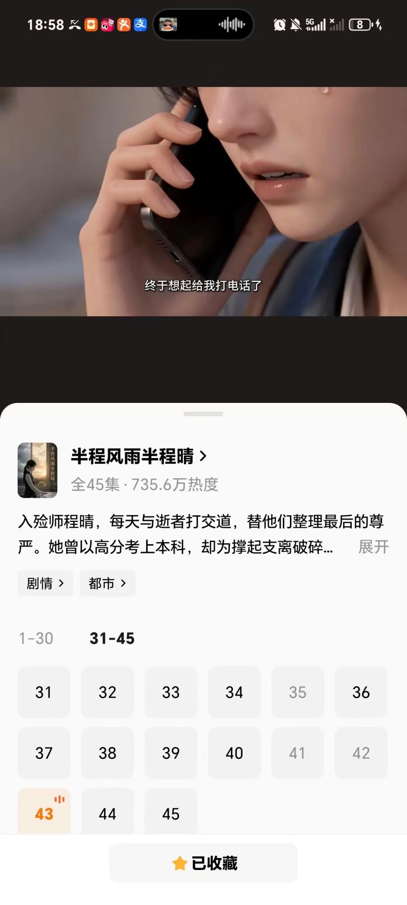
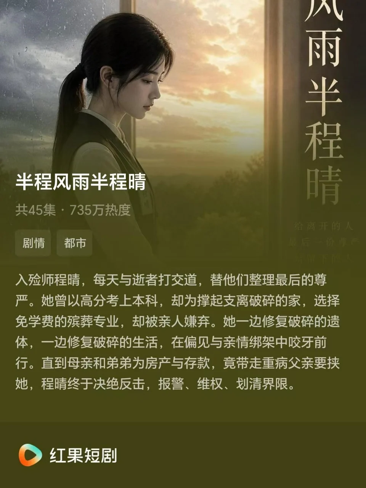

《半程风雨半程晴》
第一集
场景一 遗体整理室 日 内
【镜头从天花板缓慢下摇，穿过惨白的日光灯管，最终定格在一张不锈钢操作台上。入殓师程晴正轻缓地擦拭一具遗体，神情专注。
程晴 我叫程晴。市殡仪馆的入殓师，有人说，这是离死亡最近的人。因为我的工作，是替已经离开这个世界的人，整理出最后一份尊严。
【程晴进入回忆，年轻的儿子痛哭流涕的拉住程晴的手。
路人甲 我父亲，就拜托您了。
程晴 您放心，我一定让老先生体面的离开。
【遗体整理室程晴专注的在整理着老先生的遗体。
程晴 （旁白）在这里，我见证了太多的生离死别，人情冷暖，对于逝去的生命我无能为力.师父曾经告诉我，我要做的是给生者一份交代，一份心理安慰。
【程晴配合着旁白中的介绍做着相对应的步骤。
程晴 这份工作说简单也简单，和你打交道的都是不会说话的亡者，说难也难，因为和你打交道的都是不会说话的亡者。受到遗体后我们要先查验信息，清洁消毒，面对一些复杂情况，车祸，跳楼之类的就要整容修复，结束后换上寿衣，上自然妆，举办告别仪式。这一套下来，我的工作就结束了。
【程晴收拾着自己操作用的工具。
程晴 当然了，这份工作也需要面对很多世俗的偏见，有人觉得这份工作晦气。也有人问我，一个女孩子，每天与尸体为伴，不会害怕吗？其实一开始，我选择成为入殓师，只是想多赚一点钱。
场景二 程家 日 内
【程晴再次进入回忆。回忆中父亲重病在床，脑出血，刚知道高考成绩的程晴给父亲擦脸，母亲在旁边抱怨。
程晴 爸， 我查到高考成绩了，五百八十分远超一本线。
程母 乖囡呀，咱们家你也知道，你爸脑出血做手术，钱早就花光了，现在又瘫在床上，连话都说不了，要不你就别念了，妈妈是真的没办法了。
程晴 早就知道会这样，我报的是一所公办大专，学校知道我的成绩愿意给我免学费，每个月还会发补贴。
程母 这能是真的吗——
程晴 程阳能去读书，你一个月三千多生活费按时发放，我不用家里操心的，，更何况我学的毕业工作月薪过万。
程母 呀，那行啊。什么专业这么好，早知道让你哥也报这个！
程晴 现代殡葬技术与管理，简称入殓师。
程母 给人收尸的？你！你怎么和你爸一样晦气。家里一个丧门星不够，再来一个？
【程母喋喋不休的争吵，程晴只是拉起爸爸的手低语。
程晴 爸，你听到了吗？我和你做了一样的事。
【程晴进入儿时的回忆。
场景三 街裁缝铺 日 内
【年轻的程晴坐在角落写作业。父亲程国华坐在缝纫机前。桌上摆着一件做好的寿衣。小程晴皱着眉。
小程晴 爸，为什么小姨结婚你不能去吃席。
程父 因为爸爸要工作赚钱给小晴买糖吃。
小程晴 为什么他们都躲着你。
程父 因为他们害怕。
小程晴 害怕什么？
程父 害怕死亡，爸爸是给去世的人做衣服的。大家觉得爸爸离死亡最近，所以连带着就害怕爸爸，因为恐惧才会愤怒。
【程父停下手里的针线，慈祥看着女儿笑。
小程晴 不怕，小晴不怕。
程父 小晴你记住，人活一辈子。出生的时候，有家人迎接。离开的时候，也应该有人认真送别。
小程晴 那以后我长大了，也帮你。
场景四 遗体整理室 日 内
【程晴结束回忆，现实生活她正在用水龙头冲着自己用过的镊子等工具，愣在原地，忘记关水龙头，突然电话在台面上突然震动，程晴缓过神，关闭水龙头接起电话。
程母 （电话）今天你哥女朋友上门，你回来帮帮忙，别耽误正事。
程晴 马上下班了。
程母 还有你记得洗干净再回
程晴 知道了
【程晴脱掉工作服的同时，门口突然出来急促的敲门声。助理笑笑敲门。
笑笑 程晴姐，又有人被送来了——车祸，需要加急做遗体修复。
程母 （电话里听到后大喊）程晴，今天是什么日子，你不许去——
【程晴看向手机又看向笑笑，短暂犹豫。
第二集
场景一 走廊 日 内
【程晴犹豫片刻果断关闭电话，走向笑笑。
程晴 逝者什么情况。
笑笑 逝者男，四十五岁，死因是车祸，今天凌晨发生的事故，发现的时候人就已经去世了。
程晴 遗体情况怎么样？
笑笑 （摇头）不好，是和一辆货运卡车撞到一起的，车头都压扁了。
程晴 家属来了吗？
笑笑 在那儿。
【走廊尽头一个中年女人领着一个小女孩缓缓走过来，中年女人双眼红肿，止不住的哭泣。
【程晴看着懵懂的小女孩也忍不住叹口气，随即调整好情绪，尽可能平稳发问。
程晴 家属您好，我是程晴，由我负责帮您丈夫——进行修复，您可以给我一张他的日常照片吗？
罗妻 好，您看这里面的都是他的照片，我们一家三口去云南的，还有这个这个是童童满月的时候，他看着还很年轻呢。
程晴 好，足够参考了。
罗妻 我能不能现在就去见见他，我知道出事以后连夜过来的，但是法医不让我见他，我没关系的，什么样我都能承受住。
程晴 我理解您的心情，但是真的不行。
罗妻 （崩溃落泪） 罗杰，你怎么就——罗杰，你不是答应我早点回家吗？我不是告诉你不要半夜还接单吗，就为了这十几块把命搭上了值得吗？
程晴 女士，您要撑住，孩子还这么小呢，她也需要你。
【童童拉住程晴的衣服。
童童 姐姐，我什么时候才能见到爸爸。
程晴 给姐姐一些时间，我让你见到爸爸。
童童 拉钩（伸出手）拉钩上吊一百年不许变。
程晴 笑笑，准备一下，开始修复。
笑笑 是——
场景二 遗体修复室 日 内
【程晴在一边准备缝合器材，搅拌肤腊。笑笑看着病床上的遗体。
笑笑 姐，太难了。
【程晴缓缓打开盖在床上的白色帘子，映入眼帘的场景让她也吸了一口凉气。
笑笑 逝者的头骨彻底碎了，整个脸部压在一块，肉混着血掺着骨头，这怎么修复啊。
程晴 嘘——
【程晴示意站在门口透过磨砂玻璃可以看到隐约身型的家属。
程晴 剪刀。
【程晴把逝者衣服剪开。
程晴 镊子，托盘。
【程晴把骨头一块块挑出来。
程晴 头撞进胸骨里了，把肋骨锯开，取出头骨再粘合。
笑笑 上锯吗？
程晴 嗯。
【程晴看一眼门外，冲笑笑点点头。笑笑把电锯递过来。程晴拉开电锯，巨大的响声让门外的人注意到了动静，罗妻子开始疯狂拍打着门。
罗妻 你们在干嘛？把我丈夫还给我，还给我！
【罗妻疯狂地拍门
第三集
场景一 遗体整理室 日 内
笑笑 程晴姐怎么办？
【程晴洗好手开门出去。
【门外家属哭的撕心裂肺。
罗妻 你在对他做什么？
程晴 家属，您放心，给我点时间，相信我，我保证和平时一模一样。
罗妻 真的吗？
程晴 （点头）逝者平时有没有喜欢听的音乐？
童童 妈妈——
罗妻 有的！这是童童上周去参加唱歌比赛，我老公最喜欢的歌。
程晴 童童，我们放给爸爸听好不好。
童童 好！
【程晴回到整理室，按下播放键，稚嫩的童声即刻传遍整个整理室。
【程晴举起据子，在歌声的掩护下，完成分切。
程晴 我先用粘合剂把头骨拼上，然后你辅助我缝合。
笑笑 我有点儿害怕。
【笑笑打哆嗦。
程晴 （拉住笑笑的手）笑笑，我需要你。
【两个人配合着修复。
【门外的罗妻听着歌声泣不成声，童童在门外刚开始小声的哼唱，后来大声的唱歌。
罗妻 童童唱给爸爸听！老罗，你听呀，我们来接你回家了。
【屋内程晴对照着照片上男人的模样用肤腊捏鼻子。调好肤蜡,一点点填充缺损的部位,用塑形工具小心翼翼地勾勒出基本的骨骼轮廓。
【程晴的头上渗出细密的汗，笑笑辅助着程晴忙前忙后，墙上的钟走了一圈又一圈
【程晴上完粉底之后，对照着照片，发现男人的下巴上又一个标志性的痣。小心的用笔了一个。小心的上了腮红。
笑笑 姐。你连这个都注意到了？
程晴 （对比着手机）像吗？
笑笑 像！这 太神奇了，竟然可以复原的这么像。
程晴 好了——让家属进来吧。
【遗体整容室的门缓缓打开，逆着光，女人牵着女儿走进来。程晴注视着女人的反应。眼看着女人的眼眶逐渐湿润。
【童童拉了拉妈妈的手。
童童 妈妈，爸爸睡着了。
【女人点点头
罗妻 是啊，爸爸太累了，我们不要吵醒他。
【程晴长舒一口气，知道自己的任务完成了。
场景二 走廊 日 外
【程晴忙完出整理室，留给这对母女与丈夫的独处时光，突然发现一个满头是汗的中年男人在满口张望。
中年男人 请问，里面的是出车祸的罗杰吗？
程晴 您是？
中年男人 我是撞他的大车司机。
程晴 你想干嘛？
中年男人 你别误会，我不是来闹事的，我过来是想道个歉，帮帮忙，要钱出钱要力出力，哪怕让他家里人出出气，我心里也能好受点。
程晴 你不该来这儿的。
中年男人 是，我知道您什么意思，但我也是当爸爸当丈夫的，都是为了讨生活才起早贪黑的，出事这兄弟也是。谁不是为了过点好日子呢。我也不是故意的，那一条小路连路灯都没装，
【进入中年男人回忆
场景三 乡间小路 夜 外
【中年男人发语音。
中年男人 老婆，这批货要得急，老板说中午前送到，多给五百块。我还行，不困。
【中年男人一饮而尽功能饮料，启动车子出发。
【网约车里罗杰正在听着水手。
网约车平台 您有新的订单，请即刻查收。
【罗杰拨通电话。
罗杰 （打电话）乘客您好，我看您距离这十来公里，在村里吗？
乘客 （电话）是，师傅您要是愿意来，我给您加二十。
罗杰 好嘞。
【罗杰挂了电话给老婆发语音。
罗杰 老婆，我今晚再跑一单，他说给我多加二十呢，辛苦你带童童早点睡。
【悲剧就在此刻发生，两辆车子就在一条没有路灯的小路上撞在一块。
【结束回忆回到现实。中年男人扶着额头懊恼都不行
【身后罗杰妻子幽幽走出，紧盯着中年男人，如厉鬼附体，恨恨得说。
罗妻 就是你害死我老公的。
第四集
场景一 遗体处置室 日 内
【上集结尾，货车司机与罗妻对峙，空气凝固。程晴快步上前隔开二人，伸手拦住情绪失控的罗妻。
程晴 大姐，逝者刚修复完整，孩子还在里面等着和爸爸告别，现在争执会让逝者走的不安宁。师傅，你快点走吧——
司机 （眼眶通红，攥紧双手）我知道我没资格求原谅，我家里也有孩子，知道养孩子不容易，这是我的全部积蓄，一点心意，留给孩子读书。
【男人掏出厚厚一沓现金塞给程晴，深深鞠了一躬，转身快步离开。程晴接过钱，走到罗妻身边递过去。
罗妻 （猛地挥手打落钞票，纸币散落一地）：钱能换回我丈夫吗？他每天熬到半夜接单，就想给童童攒学区房，现在人没了，多少钱都没用！
【童童听见争吵，从告别室跑出来，一张张捡起地上的钱，懵懂看向母亲。
罗妻 不许捡！
童童 妈妈，好多钱，有了钱爸爸就不用熬夜跑单了，我们就能一起回家了。
【罗妻瞬间僵住，一把抱住女儿失声痛哭，程晴蹲下身，默默一张张捡起散落的现金，整理整齐塞进罗妻包里。
程晴 先陪孩子好好和爸爸告个别，不要哭，如果实在忍不住，不要把眼泪撒在他身上，这分量太沉，他会舍不得走的。
罗妻 老罗，你放心的走，女儿我会好好养大的，你听到没——
【罗妻一把擦去眼泪，呜咽着说，女儿帮母亲擦去眼泪。
笑笑 晴姐，今天本来要欢迎新弟妹的，这下彻底赶不上了，阿姨肯定又要怪你。
程晴 （抬手揉了揉酸胀的太阳穴，看向墙上时钟，晚上十点）：没办法，总不能让孩子见不到爸爸最后一面。收拾工具，咱们下班。
场景二 程家客厅 夜 内
【镜头切至程家，程阳和女友小雅坐在沙发，小雅时不时皱眉。卧病在床的程父靠在床头，安静看着窗外。
【程母热络的给小雅剥橘子。
程母 小雅，别客气——
【小雅笑着接过来。但私下掐程阳大腿。
程阳 妈你再去洗两个苹果。
小雅 我想回家了——
程阳 等程晴回来，拿到红包再走。
小雅 我不想要，都十一点了，我要回家睡觉。
程阳 再等等——
【这个时候门响了，程晴进屋。
第四集
场景一 程家客厅 夜 内
【这个时候门响了，程晴进屋。
程晴 我回来了。
程母 你怎么回事，我不是让你早点回来嘛？
程晴 临时加班，刚结束，这位是小雅吧。
程母 对，知道你回来的晚，人家特意等你的，这闺女心真好！
程晴： 不好意思呀，临时有紧急遗体修复，来晚了。
【程晴伸手想和小雅握手，小雅下意识往后缩了一下，假装整理头发避开触碰。程晴悬在半空的手缓缓收回，眼底掠过一丝落寞。
小雅 姐姐好——
程晴 嗯。
程阳 （皮笑肉不笑）姐，小雅今天第一天上门，你不表示表示。
程晴 早就准备好了。小雅，这是我同事从国外带的香水。
小雅 谢谢姐。
程阳 没了？红包呢？小雅第一次上门你做姐姐怎么能不准备红包呢？
程晴 还知道是你姐呀，不知道的以为我是你妈呢。
程母 你怎么说话的。
程晴 不好意思呀小雅，和我没准备，之后给你补上。
小雅 没事的。
程阳 没准备现金，来这儿有付款码。
程晴 在这儿等着呢——
小雅 诶呀，我都说不要了，你这是干嘛呀？
【小雅夺门而出，程阳在后面叫她。
程阳 都怪你！你要是提前准备她会不高兴吗？等我回来，赶紧扫给我。
程母 诶呀，当姐姐的你要照顾一点弟弟——
程晴 我今天处理了十一具遗体，其中三期车祸，最严重的逝者头骨碎成一百 多块，血和脑浆混的我满手都是。
【程晴边洗手边说。
程母 说这些吓人的做什么？
【程晴到父亲病床前，给父亲喂药，盖好父亲的被子
程晴 你们穿的吃的，住的，都是我这样赚来的，如果这不算照顾，那你就让废人程阳养你吧。
程母 你怎么和妈妈说话，你什么态度啊？
程晴 我的意思是，我很困我要休息了，明天还要起早带爸去检查。
【程母还想继续唠叨，程晴想都没想就关上门，程母吃了个闭门羹。
场景三 医院住院部病房 日 内
【清晨，程晴带着殡葬工具抵达医院病房，走廊家属哭声此起彼伏。一间病房门口围满家属，一位老太太趴在病床边，一遍遍抚摸逝者手臂，哭得浑身脱力。程晴拎着工具箱上前，轻声安抚。
程晴 阿姨，眼泪不要落在爷爷身上，他会舍不得，接下来由我协助您完成净身整理，咱们动作轻一点，不打扰老人家。
老太太 我舍不得你啊，老伴儿——
【老太太说着就捂着心脏。
程晴 奶奶，不要太悲伤，你越是这样痛心，爷爷越是放不下。
【程晴帮奶奶轻拍后背。
老太太 丫头，我没事，你继续吧。
程晴 您放心，我会仔细打理。
【程晴说着就给老人换衣服。
老太太 你看！他手，松开了，松开了！
【另一边安医生看着紧锁眉头。
第五集
场景一 医院住院部病房 日 内
【老太太指着老人的手一脸惊恐。
程晴 爷爷的手松开了，代表他放下这辈子的执念，好好的奔赴下一程了。您和他好好告个别，我们就去殡仪馆了。
【安医生来查房。
安医生 这只是神经反射，正常生理反应，不是什么放下。
老太太 丫头他说的是真的吗？那我老伴会不会还怪我没有在家陪他。
程晴 不是的阿姨，您别伤心。
【程晴扶奶奶坐下，冲到医生面前，小声教训
程晴 只有你懂是吗？奶奶现在需要的是抚慰，不是什么狗屁生理反应的科学解释。
安医生 （逻辑清晰，语气毫无波澜）：死亡是生理机能终止，仪式无法改变事实，过度沉浸悲伤只会加重亲属心理负担。
程晴 出去——
【安医生出去了。
场景二 医院食堂 午 内
【程晴收拾完逝者，到食堂打饭，刚找位置坐下，安医生端着餐盘坐在她对面。食堂其他食客见状，纷纷刻意挪远座位，留出大片空位。
安医生 早上的话，我收回一半。我承认忽略了家属的情绪需求，但依旧不认同过度繁杂的殡葬流程。
程晴 您每天和生死打交道，手术室里拼尽全力救人，见多了无力回天，所以习惯用理性隔绝共情。可普通人一辈子只会经历几次至亲离世，他们没有办法像医生一样冷静。
安医生 我见过太多家属沉溺悲伤，长期无法正常生活，仪式只会延长痛苦。
程晴 痛苦不会因为简化流程消失，反而会藏在心底变成心结。您见过车祸碎裂的遗体、产后抑郁离世的妈妈、操劳半生骤然离世的中年人吗？他们走得狼狈痛苦，家属心里满是遗憾。我修复他们的容貌，抚平伤痕，是让亲人记住他们完好温柔的样子，这份心理支撑，是冰冷的医学数据给不了的。
【安医生沉默下来，手指轻轻敲击餐盘，第一次认真审视程晴。
安医生 你的工作，远比我想象沉重。对不起，我想你正式道歉，是我过于片面。
程晴 没关系，干我们这一行的被误解是常态，今天也算给你这个毛头医生上一课。
安医生 我叫安医生，神经内科主治医生。
程晴 程晴，市殡仪馆入殓师。
安医生 我我很佩服你，希望我们可以成为朋友，这是我的电话，有需要我帮忙的随时联系。
程晴 谁会希望，有一天需要医生帮忙呀。
安医生 不好意思我——
【程晴接起电话。
笑笑 程晴姐，快回来，有复杂情况需要处理了。
程晴 马上回。
【安医生看着程晴以极快的速度收拾好离开。
安医生 程晴——
第六集
场景一 遗体处置室 日 内
程晴 逝者是一名网红女博主，整容术中意外离世，今年才二十三岁，太可惜了，花一样的年纪。
笑笑 这么好看的女孩竟然还会容貌焦虑？
【程晴接过资料，看着照片上长相精致的女生，病历标注重度容貌焦虑，常年整容、医美。
程晴 不知道从什么时候开始，这个社会对女孩子的容貌要求越来越严格，
笑笑 是啊，有的时候我也会觉得自己长得太丑了。普通人尚且如此，更何况是靠美貌出圈的网红呢。
程晴 近几年因为整容手术意外离世的还少吗？断骨增高，高颅顶水泥，磨眼眶骨以追求眼睛更大，哪一个不是反人类的病态手术。
笑笑 晴姐，为什么会变成这样呢，是我们的问题吗？
程晴 爱美之心人皆有之，错的不是你，是这背后想让你怀疑自己的人，好了，快来工作了。
笑笑 好！
程晴 准备全套塑形工具、肤蜡、准备调粉底，我现在去见家属。
场景二 接待室 日 内
【接待室里，女孩双胞胎妹妹蜷缩在沙发，双眼红肿，面前摆满姐姐日常彩妆、护肤品。见到程晴，妹妹立刻起身抓住她的手。
妹妹 我姐姐这辈子，最在意自己的脸。求你，一定要把她恢复成最漂亮的样子，我不想她带着伤痕离开。
程晴 好，你放心，有没有你姐姐之前的照片。
【程晴轻轻拍她后背安抚
妹妹 这是她的手机，里面有她的近照。
程晴 交给我，我会按照她的照片，最大程度还原她原本的模样，不会让她留有手术创伤痕迹。
【妹妹从包里掏出全套大牌彩妆。
妹妹 这些都是她日常用的，你用这些给她上妆好不好？
程晴 普通彩妆不适合遗体，水分会加速肌肤变色，我们要做的不是美化而是复原。
妹妹 这些都是最好的。
程晴 最好的可能不是最适合的，我会调配粉底液，质感贴合真人肤色，还原她本真的美感，不会过度修饰。
【安抚完家属，程晴拿着资料走进修复室，开始准备精细化复原工作，镜头定格她认真调配肤蜡的侧脸。
第七集
场景一 遗体修复室 下午至深夜 内
【修复台上，网红博主遗体静静躺着，脸颊有大面积手术创伤，皮肤凹凸不平。程晴戴上无菌手套，对照双胞胎妹妹的五官照片，一点点揉捏肤蜡填补凹陷。笑笑站在一旁辅助递工具。
【程晴长舒一口气。
程晴 好了。
笑笑 （倒吸一口气）天呐，好漂亮——
程晴 看一下像不像。
笑笑 像！太像了！
程晴 她妹妹说，这是她唯一的亲人，姐妹俩从小父母早逝，互相依靠，姐姐爱美是她唯一的精神寄托，不能有一点偏差。
笑笑 那我去叫家属来。
【笑笑带着死者家属妹妹进来。妹妹走到床边看到姐姐后反倒露出了疑惑、愤怒的表情。
笑笑 怎么样是不是和你姐姐生前一样漂亮。
妹妹 （摇头）不！这根本就不是我姐姐，这是谁？我不认识她，你们把我姐姐还给我。
程晴 您先冷静，我核对一下逝者信息。
【程晴翻开本子
程晴 您姐姐的姓名是？
妹妹 孙悠悠。
【本子上的姓名就是孙悠悠。
程晴 方便问一下，您和姐姐有多久没见面了？
妹妹 将近两年了，她工作太忙，我在外地上学，我很少有她的消息。
程晴 这是你姐姐的手机吗？
妹妹 没错。
【程晴打开手机。
程晴 你看——
【妹妹翻着手机里的照片。
妹妹 这不可能，我不认识她。
程晴 这就是你姐姐，根据我的判断，这些年她做了很多医美手术，几乎全脸都动过了。
妹妹 我姐姐，该有多疼啊。
程晴 她的工作你知道吗？
妹妹 嗯，她一直在一家娱乐公司做网红，公司一直不愿意给她曝光度，总是各种挑剔她，没想到她竟然去整容了。
程晴 这样的情况我之前也遇到过。娱乐公司与医美公司合作，一边让你工作一边挑剔你让你去整容，整容的费用用工资抵掉，你姐姐就相当于白白为公司打工。
笑笑 这也太可恶了。
程晴 恶人无所不用其极，我们只能尽可能守好初心，做自己比什么都重要。
妹妹 那我姐姐，还能变回她原来的样子吗？
第八集
场景一 遗体修复室 下午至深夜 内
妹妹 那我姐姐，还能变回她原来的样子吗？
程晴 能——
笑笑 程晴姐，你熬的眼睛都红了
【程晴拉住笑笑，悄悄地摇摇头
程晴 刚才听你说，你和姐姐是双胞胎，你们长得很像吧。
妹妹 嗯！
程晴 我们一起，让姐姐恢复本来的样貌。
【程晴按照妹妹的样子给姐姐重新修容。
妹妹 那个伤口是整容留下的吗？
程晴 是的。
妹妹 我姐姐最怕疼了，爸妈去世以后，她就不读书了，一个人瘦瘦小小的在外面闯荡，养我长大供我读书，姐姐，我是瑶瑶啊，你要记得我。我们将来还做姐妹。
【程晴看向病床，病床的女孩仿若灵魂出体，抱住正在哭泣的妹妹。
场景二 医院心外科诊室 次日上午 内
【程晴带着复查病历走进诊室，抬头看见主治医生正是安医生，二人皆是一愣。
安医生 是你？
【程晴也是一愣随即大方的微微一笑。
程晴 安医生您好，今天不是来给你上课的，是来求教的。这是我父亲的片子，脑出血之后就失去了行动能力，最近我看他经常睡觉，一睡就是一天，想来检查一下是不是有什么问题。
【安医生仔细查看程晴父亲的脑片
安医生 病人现在脑子里这有一大块的淤血，你看——
程晴 有什么好的解决办法吗？
安医生 可以做微创清淤手术，好的一面是如果手术顺利，那你父亲的术后肢体控制、语言能力大概率能恢复一部分。但，手术的成功率只有六成。
程晴 六成？这么低
安医生 是，老人家毕竟年纪大了。
程晴 不行，这风险太高了，万一手术失败，连现在的状态都维持不住，我不敢赌。
安医生 保守治疗只能维持现状，淤血长期压迫脑神经，后续会出现器官衰竭，手术是唯一改善机会，我建议你认真考虑。
程晴 没有更好的方法了吗？
【安医生摇头，就在这个时候程晴的手机突然响起来。母亲的电话突然打来，听筒里传来激烈争吵声，程阳嘶吼的声音清晰传来。
程阳 （电话杂音）这套房子必须给我当婚房！她程晴有本事，让她再买啊！
程母 程晴啊，你快点回家了，你弟弟他要把家里砸干净了。
【安医生明显听到了电话的声音。
程晴 谢谢安医生，改天我带我爸爸本人来检查，麻烦您了！
【程晴匆忙收起桌上的片子，就在这个时候安医生突然按住她的手。
安医生 手机给我。
【程晴懵懵的递过去。
【安医生迅速按下号码拨出，桌上安医生的手机亮起。
安医生 程晴，有事随时联系我。
程晴 好——
第九集
场景一 程家老房子客厅 夜 内
【镜头切换到老房子，满屋子到东西被程阳砸的乱七八糟的，父亲的药撒的满地都是。
【程晴打开房门，一瓶药正好砸到门框上。
程母 程晴，你可算回来了，你快管管你弟弟吧。
程晴 你发什么疯？
程阳 都是因为你！小雅父母不同意她和我结婚。
程晴 他们不同意和我有什么关系，怎么你女朋友看上我了？
程阳 放屁！要是你这户房子当时落的是我的名字，他爸妈会不同意吗？
程晴 明白了，姑娘的父母看出你没房没车没本事，是个混吃等死的穷光蛋，不愿意你们俩在一起了。
程阳 你找揍！
【程阳说着就要冲上去打程晴。程晴想都没想包里掏出防狼喷雾，喷的程阳满脸都是，杀猪一样的叫声贯穿整个屋子。
程母 程晴，你怎么能伤害你弟弟。他要房子你就给他吧，他可是你亲哥啊！
程晴 房子，是我咬着牙赚钱，每个月还贷款给你和我爸养老的，他在这儿住我就不说什么了，现在还想鸠占鹊巢，天下还有这种美食。
程母 那你还想怎么样，你帮帮他怎么了？反正你也不差钱。
程晴 因为我有，我就要帮他分给他，那你现在就让银行分我点钱吧。
程阳 你没完没了了是吧——（程阳眯着眼睛痛苦地说。
程晴 是，当然没完。
【程晴拿着棒球棒到程阳的屋子里，轮起棒子就砸，把电脑游戏机统统砸碎。
程阳 我的电脑！我和你拼了。
【程阳冲过来，想要把程晴推下窗户。程晴一个踉跄，几乎要摔出去的瞬间停住。
第十集
场景一 程家老房子客厅 夜 内
【程阳冲过来，想要把程晴推下窗户。程晴一个踉跄，几乎要摔出去的瞬间停住。
程母 住手！
【程晴用膝盖狠狠的把程阳顶飞，然后轮起棒子到程阳的脸附近突然停住，吓得程阳大气不敢出。
【程晴把棒子扔到一边，擦擦手。
程晴 滚。
【程阳不敢再肆意撒泼，站在一旁愤愤不平瞪着程晴，心底埋下怨恨。
程母 造孽啊，你怎么这么打你弟弟，阳阳，妈妈陪你去医院啊。
【程母搀扶着被揍的鼻青脸肿的程阳离开，听到门关上的声音。程晴长长的舒出一口气，浑身力量像被抽干一样倒在椅子上。
【程晴撑着去隔壁看望父亲，父亲在床上歪着头，一动不动。
程晴 爸-爸？爸！
【程晴看父亲没有反应。
【程晴一边扶着父亲，一边给安医生拨打电话。
程晴 安医生，我父亲现在怎么叫也叫不醒，怎么办怎么办？
安医生 程晴，先冷静，现在拨120，你家地址，发给我，我马上到。
场景二 小区门口 夜 外
【程晴跟随医生推父亲上救护车，就在这个时候安医生赶到。
程晴 安医生您快看看我爸。
安医生 （拍拍程晴）我来了，放心
场景三 医院走廊 夜 内
【程晴靠在走廊，双眼通红的看着抢救间的灯。
【抢救室的灯由红转灭，安医生从抢救室走出。
安医生 情况已经稳定住了，送来的很及时，叔叔没什么大事，观察一下就可以回去，但一定要注意按时吃药，不能有太大情绪波动。
程晴 好的好的，谢谢安医生。
【程晴撑着的一口气舒出来，突然一个踉跄，安医生扶着她。
安医生 你回去好好休息吧，叔叔这边我帮你照顾。
程晴 没事，我通知我妈了，她一会儿回来。
安医生 看你这个身体状况，明天要不请个假吧。
程晴 （摇头）请假会扣满勤的，再说医院有人等着你治愈，那边也有人等我疗愈啊。
安医生 照顾好自己。
程晴 安医生，谢谢你。
场景四 程晴办公室 日 内
【程晴正在记录近期的工作档案，眼睛里的憔悴藏不住。
笑笑 姐，你看着好累，要不吃了午饭睡一会儿吧。
程晴 还差一点点，做完再去吃饭。
工作人员 程晴在吗？
程晴 我是，您说怎么了。
工作人员 原本是排在下午的逝者，现在突然办了加急，要求现在处理尸体。
笑笑 现在是休息时间。
工作人员 她说愿意加费用，越快越好！
程晴 向来都是希望能多陪逝者一会，这么着急的倒是少见，笑笑你先吃，我去看看什么情况。
第十一集
场景一 殡仪馆走廊 日内
【程晴跟随着工作人员前往遗体整理室。
程晴 什么死因，资料齐全吗？
工作人员 急性脑出血，急救到场人已经没了，死亡证明、户籍手续全部齐全，家属要求全程简化流程，越快火化越好。
程晴 材料给我核对一下。
【程晴拿起材料，材料上的照片让她觉得莫名的眼熟。
工作人员 怎么了？看着眼熟？
程晴 嗯。
工作人员 你再好好看看。这是咱们市有名的企业家林振宏，林乔大厦就是他家的。快点吧，他妻子刚才催了好久。
程晴 再急也得给逝者体面，哪有刚送来就赶着火化的。
【推开接待室门，一身名贵套装的林妻乔曼端坐沙发，妆容精致，眼底没有半分悲痛，只剩焦躁。
乔曼 程师傅是吧，麻烦你快一点，悼词简短，仪容简单打理，寿衣选最基础那款，不用额外化妆修饰。越快越好。
程晴 林太太，常规流程需要留出家属告别时间，遗体修复、仪容整理至少要预留两小时，以防有什么意外情况。
【乔曼指尖敲击桌面，声音拔高。
乔曼 我说了（有点儿生气）不用告别，我们不需要多余仪式，所有费用加倍，只求半小时之内送进火化炉。
【程晴翻看死亡证明，各项盖章、急救记录完整合规，无从推脱，只能点头。
程晴 我先带您丈夫进整理室，您要是想单独说几句话，现在还来得及。
乔曼（摆手）：没什么好说的，抓紧时间。
场景二 遗体整理室 日 内
【笑笑跟着程晴穿戴无菌工具，看着台上林振宏冰冷的遗体，小声嘀咕。
笑笑 姐，我回来了，这家属也太奇怪了，别人都舍不得，她反倒巴不得快点送走。
【程晴给逝者换寿衣。
程晴 手续齐全，我们只能遵从家属意愿，做好分内事。
【程晴快速清洁消毒，换上素色寿衣，简单铺好粉底，没有做任何细节修饰。
【乔曼站在玻璃门外，全程没有靠近，一直盯着墙上时钟。半小时过去后程晴出来。
程晴 仪容已经整理完毕，悼词我精简好了，现在可以进行简短告别。
乔曼 用不着，现在就去火化，让工作人员火烧的大点，旺一点。
【程晴配合工作人员将遗体推走，等候区传送带缓缓启动，林振宏的遗体慢慢送入火化炉膛。
【另一边逝者妻子乔曼嘴角勾起一抹微笑。
【走廊尽头，远处两道身影跌跌撞撞冲进来，其中一位老太太大喊一声
老太太 停下！不能烧！
第十二集
场景一 殡仪馆走廊 日 内
【火光刚从炉口隐去，远处两道身影跌跌撞撞冲进来。白发老太拄着拐杖，身旁年轻孕妇小腹微隆，脸色惨白。
老太 停下不能烧！
【孕妇看见炉膛关闭的瞬间，双腿一软，直直瘫坐在长椅上，捂着脸失声痛哭。
孕妇 阿姨！怎么办呀——
【老太浑身发抖，转头死死盯住乔曼，声音尖利悲愤。
老太 乔曼！你好狠的心！我儿子尸骨未寒，你竟然急着把他烧掉！
【乔曼立刻垂下眉眼，挤出两行假泪，故作委屈。
乔曼 妈，振宏走得突然，我心里比谁都痛，简化流程是不想让他多受罪。早点过去早点投胎。
老太 受罪？你是怕她肚子里的孩子分走家产！
乔曼 孩子？什么孩子？
老太 既然已经这样了，那你就抓紧给小彤母子迎进家门，好好照顾他们，镇宏的在天之灵或许才能原谅你。
【乔曼抬眼，眼底藏着一丝得意，嘴上却满是讥讽，上下打量孕妇。
乔曼 妈，您说话要有凭据，这个女人是谁我都不认识，凭什么说孩子是振宏的？你怕不是也被她给骗了。
孕妇 乔曼姐你怎么能这样说呢，你明知道我和林总的关系，我肚子里的孩子就是他的。
乔曼 闭嘴！不要诬陷我丈夫的名声，林振宏爱我敬我谁不知道，岂容的你在这儿诽谤他，小心我去告你。
老太 这个是振宏的孩子，你明知道，还要一把火烧掉所有证据！
乔曼 妈，你不要被她骗了。
孕妇 阿姨，我没有说谎，我肚子里的真的是林总的孩子。我可以做亲子鉴定的。
乔曼 现在人都火化了，去哪做亲子鉴定？
孕妇 你，你是故意的。阿姨，她是故意的，她-一定是她害死的林总。
老太 乔曼，你早就知道了，是你害死的我儿子。
乔曼 妈，看清楚了，林镇宏是脑出血意外去世，白纸黑字，写的很清楚，至于你，肚子里是谁的就去找谁负责，少在这儿撒泼打滚。
【孕妇情绪激动，胸口剧烈起伏，眼前一黑直直晕倒在地。老太慌了神，顾不上争执，搀扶起孕妇往外赶。
老太（回头瞪乔曼）：你会遭报应的！
【乔曼倔强的不让眼泪落下。
场景二 走廊 日 内
【走廊只剩程晴、笑笑和乔曼，笑笑识趣收拾工具离开，留出二人独处空间。乔曼褪去伪装，脸上悲伤尽数消散，靠着墙壁长长舒了口气。
【程晴递过去一瓶温水，安静站在一旁。
乔曼 你是不是也觉得我心肠歹毒？揣着明白装糊涂。
程晴 每家都有难言之隐，我不评判，只听您想说的。
【乔曼指尖摩挲水杯，缓缓开口，眼底藏着多年委屈。
第十三集
场景一 走廊 日 内
【乔曼指尖摩挲水杯，缓缓开口，眼底藏着多年委屈
乔曼 我和振宏二十岁相识，白手起家打拼出这份家业，林乔大厦知道吗？
程晴 是您二位名字的缩写？
乔曼 是他曾经爱过我的证明。当年说好二人世界，不要孩子，赚够钱就环游全世界。后来他生意做大，心思也变了，年年催我生孩子，可我今年四十五，早就错过了最佳年纪。
【程晴静静倾听，没有插话。
乔曼 我偶然发现他在外养了这个小姑娘——
【乔曼陷入回忆。
场景二 乔曼家中 日 内
【林镇宏在厕所偷偷打电话给第三者。乔曼在门口偷听。
林镇宏 诶呀，你想吃什么就让保姆给你做。我给你的那张卡，你随便刷。等周末我就去陪你，我们的儿子乖不乖呀——哈哈哈放心吧，等你生下孩子，我就会和她摊牌的。
【乔曼握紧了手里的抹布。
场景三 走廊 日 内
乔曼 老天爷也想帮我一把，前几天，他出去应酬，喝了不少酒，晚上回家后没多久突发脑出血猝死，我谁也没告诉，直接送到了医院，到了医院就不行了。他父母早分家，也没有兄弟姐妹，只要没有亲子鉴定，这个孩子永远没法证明和他有关系，家产就全是我的。
程晴 那您之后打算？
【乔曼轻轻笑了，眼神带着解脱。
乔曼 等骨灰取出来，卖掉公司股份，兑现当年我们的约定，走遍全世界。可能老天爷也看不下去想帮我一把吧。
【程晴看着她复杂的神情，心底五味杂陈。
场景四 殡仪馆办公区 日 内
【乔曼离开后，程晴坐回工位整理台账，手机不间断震动，屏幕全是母亲的来电。
【程晴按下静音，继续手写档案，没过两分钟，电话再次响起，刺耳铃声响彻安静办公室。
【领导放下手里的工具，皱眉看向程晴。
主任 小程，工作时间手机一直响，影响其他人做事，家事能不能下班后再处理？
程晴 对不起主任，我这就去处理一下。
【程晴满脸歉意，连忙走到走廊接起电话，语气疲惫。
程晴 妈，我现在上班，有什么事晚上回家说行不行？
程母 回家说？程阳昨天被你打伤，在家躺了一天，医药费你必须全部承担！还有你爸复查的费用，安医生那边你记得去缴费，你天天忙工作，家里一堆烂摊子全都丢给我？
第十四集
场景一 殡仪馆办公区 日 内
【程晴揉着发胀的太阳穴。
程晴 程阳动手推我想把我推下楼，你坐视不理，我只是自保你却替他喊冤，医药费我不会出。爸的复查我早就安排好了，不用你操心。
程母 不管！你今天下班必须转五千块给你哥，不然我天天打电话去你单位闹，让所有人都知道你不孝顺！
【程晴无力争辩，简单应付两句挂断电话，返回工位，满心烦躁，落笔的字迹都乱了。
笑笑 吃颗糖吧程姐。
【笑笑剥开一颗塞进程晴嘴里。
笑笑 林太太那件事我越想越唏嘘，同床共枕多年，最后闹到这般地步。
程晴 生死面前，钱财、情爱都会撕开人最真实的一面。我见过太多，恩爱夫妻转眼反目，血脉亲人只为家产争执不休。
【主任走过来，语气缓和几分。
主任 程晴呀， 家里烦心事我不多说，但上班要分清公私，下次手机调震动，别再影响大家。
程晴 对不起，下次我一定注意。
【就在这个时候手机突然又弹出了一条消息，程晴以为是母亲的消息随手就按掉了，但其实这一条是安医生发送的。
安医生 （短信）今晚一起吃个饭吗？
场景二 殡仪馆门口 夜 外
【程晴刚刚下班，满脸疲惫。远远看见安医生站在路边等她，一身干净白衬衫，手里拎着两杯热饮。
【安医生的车停在路边，一见程晴出来冲程晴挥手。
程晴 你怎么来了？
安医生 我给你发了消息，想要请你吃顿饭，看你没回我就猜是不是程女士忙的连消息都来不及回了，就想在你下班的时间等一等。
程晴 你都不知道我几点下班。
安医生 所以我下班了就立刻过来了。
程晴 那万一我加班呢？
安医生 那就多等一会嘛。
程晴 那还等什么？
安医生 嗯？程晴 出发！
场景三 安静私房菜馆包厢 晚 内
【包厢灯光柔和，没有喧闹人声，桌上摆着清淡家常菜。安医生把热饮推到程晴面前。
安医生 选了清淡口你尝尝，看看喜不喜欢。
程晴 还不错呢！
安医生 你记得带叔叔再来检查一下，我调整一下药物的剂量。
程晴 谢谢你呀安医生，还真么惦记我爸，最近每天两头拉扯，我有时候真觉得撑不住。
安医生 你的工作每天直面离别与人性阴暗，回家还要承担所有家庭重担，很少有人能扛住这么多压力。你不必强迫自己满足所有人的期待，程阳是成年人，不该事事依靠你，阿姨的索取，你也可以学会拒绝。
程晴 我倒是也想拒绝，可是毕竟我们是亲人。
安医生 心软不是错，但别让你的善良变成别人拿捏你的软肋。我在医院见过很多独自扛下一切的人，长期压抑情绪，最后自己身体先垮掉，你兼顾逝者、父亲、家庭，唯独忽略了你自己。
程晴 以前总觉得，我的工作、家里的糟心事，很难有人能理解。
安医生 我愿意慢慢理解，以后不管是叔叔复查的问题，还是工作、家里难以释怀的心事，你都可以和我说，不用一个人硬扛。
场景四 菜馆门口 晚 外
【晚餐结束，夜色温柔，安医生主动提出送程晴回家。两人并肩慢走，晚风吹散连日积攒的烦躁。
安医生 下周叔叔来复查，我提前预留诊室，不用你排队等候。如果程阳和阿姨再为难你，随时给我打电话。
【程晴停下脚步，看向身旁的安医生，轻轻弯起眉眼。
程晴 安医生。这段时间，多亏有你。
【两人缓步走向路边车辆，路灯将两道影子拉长，气氛安静柔和，二人之间的距离悄然拉近。
第十五集
场景一 程晴家老让子 夜 内
【客厅只开一盏暖黄小灯，程父在里屋沉睡，程母端着一杯温水坐到程晴身边。
程母 晴晴，妈知道你白天上班辛苦，今天妈不跟你吵，咱们娘俩好好说说话。
【程晴刚洗漱完，一身疲惫靠在沙发扶手上，没接话。
程母 你哥和小雅的事卡在上首付上，人家女方那边松口了，只要凑齐三成首付就能定日子。你手里宽裕，能不能先借他三十万，等以后他工资涨上来慢慢还你。
【程晴听见数字，苦笑一声
程晴 借？从小到大，我什么时候往家里拿东西，不是 “借” 最后变成理所应当送给他？
程母 他是你一母同胞的亲弟弟，家里就你们两个孩子，你不帮他谁帮他？你这份工作赚钱多，外人都说你月入上万，拿出三十万根本不算难。
【程晴猛地坐直身子，声音带着压抑许久的哽咽。
程晴 我当初五百八十分超一本线，放弃本科去读殡葬大专，图什么？就图这个专业免学费、工资高，能凑钱给脑出血瘫痪的爸爸做手术、常年买药！那时候家里一分存款都没有，你天天念叨家里垮了，是我咬着牙扛下所有开销。
程母 那都是过去的事了，现在日子好起来了，你弟弟终身大事要紧。
程晴 日子好起来是我一笔一笔守着逝者挣来的！别人嫌我晦气、躲着我握手，小雅第一次上门看见我都下意识躲开，我在外受偏见，回家还要无休止补贴程阳？这不是帮忙，是无休止吸血。
程母 你怎么能这么冷血？一家人分这么清楚？
程晴 再不分清楚，我连自己的生活都要被拖垮。主任已经找我谈话，说我工作时间总被你电话骚扰，频频分心，对逝者、对家属都是不负责任。我决定搬出去单独租房住。
程母 搬出去？那家里房贷、你爸看病怎么办？
程晴 房贷我照常按月还，每周固定两天带爸爸复查买药，医药费一分不会少。但这套房子，绝不可能过户给程阳，也不会再给他大额钱款。以后家里鸡毛蒜皮的琐事，别再往我工作单位打电话打扰我。
【程母还要争辩，程晴起身走进次卧，关上房门，将母亲的絮叨隔绝在外，屋内只剩她压抑的低泣。
【程母眼睛一转。
程母 搬出去，搬出去也好，让阳阳回家来住。
场景二 殡仪馆值班室 早 内
【镜头转至殡仪馆值班室，程晴抱着背包蜷缩在长椅，程晴前一天晚上留宿单位，避开家里压抑的氛围。
【敲门声急促响起。
笑笑 晴姐，你昨晚在这儿住的？！
程晴 唉，一言难尽。
笑笑 我还以为你一早知道有要处理的逝者，提前过来了。
程晴 正好，无缝上班了。什么情况？
笑笑 急诊刚送来加急遗体，法医刚做完勘验，家属已经在路上了，逝者才二十九岁。
【程晴站起身整理工作服，压下所有私人情绪。
程晴 什么原因，遗体状况怎么样？
笑笑 急性心肌梗死，长期熬夜高压透支，法医说连续三周日均只睡三四个小时，体检报告全是预警信号。我刚看了一眼遗体，眼底全是乌青，头发大把脱落，整个人看着疲惫得不像个二十多岁的年轻人。
【程晴心口一紧，拿起工具箱跟上笑笑，脚步沉重走向遗体整理室
第十六集
场景一 遗体整理室 深夜 内
【惨白冷光落在不锈钢操作台，年轻女孩林溪静静躺着，面容清瘦憔悴，眼下浓重青黑，发缝稀疏，哪怕安静沉睡，周身都透着挥之不去的疲惫。程晴戴上无菌手套，轻轻抚平女孩凌乱的发丝，心底满是酸涩。
【笑笑站在一旁整理清洁消毒用品，小声叹气。
笑笑 才二十九岁，听家属说还是国内顶尖名校硕士，好不容易进头部企业，本该前途一片光明，怎么就把身体熬垮了。
程晴 很多旁人眼里的天之骄子，背后全是无处释放的重压。先做基础清洁，等下家属到了再沟通妆容，尽量柔和一点，别让老人看着太难受。
笑笑 姐，你看她的黑眼圈。
程晴 现在大家过得都太不容易了。笑笑你去把遮瑕给我拿来，我好好给她盖一下，再拿一顶假发。
【程晴给逝者稀疏的头顶上带上一顶假发又仔细的遮去黑眼圈。
【两人有条不紊开展工作，走廊传来细碎压抑的哭声，一对头发花白的老夫妻互相搀扶着缓缓走近，老太太一夜白头，鬓角全是银霜，双腿发软，几乎靠老伴搀扶才能站稳。
【程晴快步上前扶住老太太，递上温水。
程晴 叔叔阿姨，先缓一缓，有什么想跟姑娘说的，待会可以单独跟她好好告别。
林母 （浑身颤抖，泪水止不住往下淌）我的溪溪，我的乖女儿…… 昨天晚上还跟我们视频，说想休息两天，我们还在念叨别家小孩升职加薪，催她再加把劲，怎么一夜人就没了。
【林父死死攥着拳头，眼眶通红，一言不发。
林父 这孩子的手机就没停过，我打开一看，全是工作群的消息，她已经连着半个月加班到两三点了，怎么人死了都不放过。
程晴 叔叔阿姨，你们保重身体，节哀顺变。
场景二 告别厅 日 内
【程晴简单布置了一下告别厅。
程晴 阿姨，有什么藏在心里的话，现在说给姑娘听，她能听见。
林母 溪溪，是妈妈对不起你！从小到大，我们从来没让你歇过一天。小学必须考年级第一，周末排满钢琴、绘画、奥数；考上名校，我们又盯着别人的孩子攀比，谁家薪资高、谁家晋升快，转头就数落你不够努力。
【林母伸手轻轻触碰女儿冰冷的脸颊，声音撕心裂肺。
林母 你进公司之后连续加班三周，跟我们说身体撑不住，我们非但没心疼，还跟你说 “别人都能扛，就你娇气，年轻往死里干才有出路”。那天晚上你明明想给自己放一天假，我们还在耳边不停念叨攀比，那句话，一语成谶啊……
【程晴站在门边静静聆听，笑笑红了眼眶，低头擦拭眼角。
林母 孩子啊，这个日记，能一会儿一块烧了吗？
【林母从随身包里掏出一本泛黄日记本，递到程晴手中，指尖不停发抖。
程晴 可以的，这是死者的吗？
林母 这是她锁在抽屉里的日记，我们昨天收拾房间才翻出来。上面写着，每天活着都像泡在深海，怎么努力都达不到我们的期待，死或许比活着轻松，只想安安静静不用再听比较。
【程晴翻开日记，一行行压抑绝望的文字刺入眼底，心口沉甸甸的五味杂陈。
【随着日记本，进入回忆。
场景三 林溪家 夜 内
【深夜，林溪坐在书桌前写日记。
【日上的一行行文字如同飞出纸张一般浮在空气中。
第十七集
场景一 林溪家 夜 内
【深夜，林溪坐在书桌前写日记。
【日上的一行行文字如同飞出纸张一般浮在空气中。
林溪 大家都说上岸就好，可什么是岸，考研的岸，考公的岸，职称的岸，岸的那边还是岸，我好累啊。
林溪 爸爸妈妈，我并不想和任何人作任何的比较，那对我来讲不是激励而是痛苦，我不是货物，为什么要和别人比。
林溪 今天工作了将近十八个小时，只为老板说一句干得好，可我好累，我要撑不住了。
林溪 救我——
场景二 告别厅 日 内
【面前床上林溪紧闭双眼，像是沉沉睡去一样。程晴轻轻的将日记放在林溪的手上。
程晴 （内心独白）：我们总逼着人往前奔跑，拿旁人做标尺不断攀比，可到底哪里才是安稳上岸的地方？攀比偷走所有幸福感，非要等到彻底失去，才懂最珍贵的平安健康早就握在手中，林溪，好好睡一觉吧。
场景三 办公室 日 内
【笑笑端来一杯热姜茶递给程晴。
笑笑 姐，林溪已经送去火化了。
程晴 辛苦了笑笑
笑笑 这件事看着太压抑了，明明那么优秀的姑娘，被无休止的期待和比较压垮了。
程晴 其实最好的一早就在我们的手里了，无需比较，无需苦苦挣扎。
笑笑 我将来要是有孩子，就让他快乐长大就好，不求别的。
程晴 那你的孩子会很幸福的。
笑笑 对了姐，你住在办公室里也不像个样子，晚上多冷啊，要不你去我家。
程晴 （笑着摇摇头）我准备找房子搬出去了。我没办法再忍受一边是家里一地鸡毛，一边是需要全心对待的逝者的两头拉扯。
笑笑 那你真打算搬出去？阿姨那边能同意吗？
【程晴摇了摇头，拿出手机翻出安医生的联系方式，指尖犹豫片刻，拨通电话。
【电话接通，安医生温和的声音传来
安医生 程晴？怎么了？
程晴 安医生，不好意思打扰你工作。我想拜托你一件事，我打算搬出去单独租房，你人脉广，能不能帮我留意一套离殡仪馆近、安静一点的小户型？
【安医生顿了两秒，轻笑出声。
安医生 巧了，我正好知道一套空置一室一厅，楼层不高，采光安静，离你单位车程十分钟，价格很优惠。
程晴 那太好了！
安医生 行，那你收拾一下，我今晚就带你去看房子。
【程晴挂了电话，笑笑一脸神秘的看着程晴。
笑笑 不简单呀——
程晴 嗯？
笑笑 天下怎么会有这么巧的事，你想找房子他就有房子，不简单！
程晴 刚好就碰到了嘛——
笑笑 嘿嘿，那我们就看看到底是我的第六感准还是老天爷的正缘缘分比较强！
第十八集
场景一 程晴新家 夜 内
【安医生从兜里拿出一把崭新房门钥匙，放到程晴掌心。
安医生 这是公寓钥匙，我们一起进去看看吧。
【程晴打开房间，发现安医生已经提前布置好了，新的床上用品，干净的屋子。
安医生 水电燃气我都提前结清，家具家电齐全，拎包就能入住。房租不用急着按月付，你手头紧可以季度结算，不用有心理负担。
程晴 真的不知道该怎么谢你，先是父亲抢救那晚帮忙照看，现在又帮我解决住房难题，我所有难开口的心事，你从来没有半点嫌弃。
安医生 能帮你分担一点，我很乐意。对了，先说说叔叔手术的事吧。目前叔叔颅内淤血压迫运动与语言神经的范围持续扩大，保守药物只能延缓恶化，无法消除淤血。微创清淤手术创口小，风险可控，六成成功率不是虚数，很多同年龄段术后都能自主简单活动。
程晴 我再好好想想，尽快给你答复。时间不早了安医生，我打车送你回去吧。
安医生 不用了，我家就在这儿。
【安医生打开了对面的房门。
安医生 新邻居晚安。
【程晴震惊的看着安医生。
程晴 （呆呆地）晚安——
场景一 程晴新家楼梯间 日 内
【程晴打开门准备上班，结果门口放着做好的早餐：一杯咖啡和三明治。以及一张便利贴。
便利贴 再忙也要好好吃饭。——安屿
场景二 遗体操作间 日 内
笑笑 哇！我就说了嘛，房子的事没那么简单！
程晴 少贫了，开始工作了吧。
【程晴拿着资料单核对，床上的女孩，苍白羸弱，手腕上有一处很明显的刀痕。
程晴 余小鱼，自杀，
笑笑 （叹气）看着这么年轻的生命逝去却无可奈何，程晴姐，我心里很难受。
程晴 一会儿看到逝者家属收好情绪。
场景三 家属等候区 日 内
【一位年迈的母亲以及孩子父亲还有怀抱中正酣睡的小朋友，三人沉默的在等待区坐着。
小鱼丈夫 妈，是我没有及时发现小鱼的情况，你怪我吧。
小鱼母亲 把孩子给我。
小鱼丈夫 孩子是无辜的。
小鱼母亲 他不无辜，因为你的孩子，我失去了我的孩子！
【小鱼母亲说完以后崩溃大哭
第十九集
场景一 家属等候区 日 内
小鱼母亲 他不无辜，因为你的孩子，我失去了我的孩子！
【小鱼母亲说完以后崩溃大哭
程晴 阿姨您平复一下情绪，我是负责余小鱼女士的入殓师程晴，方便和我讲一下小鱼女士的情况吗？
小鱼母亲 小鱼，小鱼从生了孩子之后就开始不好了。
【进入回忆
场景二 产房 日 内
【产妇余小鱼躺在病床上，周围的人都围着孩子打转，她一个人嘴巴渴的脱皮。
小鱼丈夫 孩子长得和我简直一模一样，
小鱼婆婆 你轻点，别伤到他。
余小鱼 老公，我想喝水——（声音很小）
小鱼丈夫 妈，你说他叫什么好呢？
余小鱼 我想喝水。
【小鱼开始去拿桌上的水杯，没想到一个翻身摔下了床，顺着大腿间流出一滩尿液。
【余小鱼妈妈这个时候刚好回来，手里拎着给小鱼买的小米粥。
小鱼妈妈 闺女你怎么了？
余小鱼 （木楞的，悲伤的）我就想喝口水。
小鱼丈夫 那你喊我啊，
余小鱼 我喊了，但你们听不见。
场景三 余小鱼家 日 内
【余小鱼在卧室床上一动不动的坐着。孩子在旁边放声大哭。
小鱼婆婆和丈夫在客厅说悄悄话。
小鱼婆婆 她也不管孩子啊，孩子饿的哇哇哭，她一口都不喂。
小鱼丈夫 妈，要不算了，我们还是喂奶粉吧。
小鱼婆婆 你懂不懂，第一口母乳有多珍贵，那都是营养，
小鱼丈夫 那小鱼不愿意。
小鱼婆婆 当妈的有什么愿不愿意，喂上第一口就好了。来，你过来帮我。
【小鱼婆婆和丈夫冲进卧室。
余小鱼 妈，你们干嘛？
小鱼婆婆 你当妈的怎么能不喂奶呢？
余小鱼 妈，我疼——我不要！
小鱼婆婆 你是废物啊，按住你老婆。
【余小鱼的婆婆抱起孩子，毫不犹豫的撕开衣服，抱着孩子开始喂奶。
【余小鱼一开始还挣扎后面就开始默默的流泪。
第二十集
场景一 余小鱼卧室 夜 内
【孩子半夜放声大哭，余小鱼怎么哄都不行，吵醒了旁边的丈夫。
小鱼丈夫 你能不能哄好了，我明天还要上班呢，
余小鱼 他就是哭我有什么办法，
小鱼丈夫 吵死了，你会不会当妈。
【余小鱼抱着孩子默默走到客厅，一晚上没睡，第二天太阳升起，屋里被照亮，余小鱼轻轻放下孩子，抓了一下头，发现掉下一大把的头发，
【余小鱼站起来走到镜子面前，看着镜子里她肚子上遍布肚皮的妊娠纹，默默的流泪。
【余小鱼拿起厨房的刀，坐在窗前看初升的太阳，拨通了给母亲的电话。
小鱼母亲 闺女，怎么这么早给我打电话。
余小鱼 妈妈，我好像有一点不喜欢我的孩子。
小鱼母亲 妈知道，这是正常的，你也是第一次当妈妈。
余小鱼 他们都说当妈之后就知道怎么当妈妈了，说这是天性，可是我学不会——
小鱼母亲 没有人天生会当妈妈。
余小鱼 对不起妈妈，我没有成为一名好妈妈。以后也没法在成为一位好女儿了。
【余小鱼手起刀落，清晨，第一抹阳光落在她的身上，格外寒冷，她的脸颊泛起淡淡的红。
场景二 遗体处理室 日 内
【程晴取来温和遮瑕膏、粉底、化妆刷，坐在操作台边，动作轻柔缓慢。她蘸取遮瑕，一点点仔细遮盖女孩小腹清晰的妊娠纹，随后细致擦拭面部，抚平憔悴蜡黄的肤色。
程晴 孕育新生命本该是幸福的事，可她却被困在无尽煎熬里。
【她拿出梳子，细细梳理女孩干枯散乱的长发，挽起温柔低马尾，点缀一支小巧珍珠发夹，妆容清淡柔和，恢复女孩生前干净温婉的模样。
笑笑 可以了吗？我去通知家属。
程晴 稍等一下。
【程晴轻轻拉起逝者的手，发现逝者甲床偏薄，像是经常做美甲，但好久没做了，张了一圈死皮。
【程晴匆匆拿起手机，美团下单一个穿戴甲。
笑笑 姐，你这是干嘛？
程晴 我观察到，逝者的指甲甲床偏薄，之前应该是很爱美爱做指甲的但是厚厚的又积着一层死皮，应该是因为生了宝宝很久没有做过了。
笑笑 姐，你观察的真仔细。
程晴 哪个女孩不希望自己能体体面面的离开，马上就到，我粘好了你再通知家属。
【二十分钟后
【程晴专心点给余小鱼沾上指甲，指甲上是蓝色的海洋。
程晴 小鱼小鱼快快游，未来生活皆自由。
第二十一集
场景一 遗体处理室 日 内
【笑笑指引下逝者的家属进来了。门外传来轻轻脚步声，女孩母亲缓步走进来，五十岁上下，脊背佝偻，双眼空洞无神，没有落泪，安静站在操作台旁，直直盯着女儿，嘴唇不停颤抖，发不出一点哭声。
小鱼丈夫 小鱼，我错了，我应该早一点意识到你生病了。
【笑笑站在门边，低声想对小鱼妈妈上前说节哀，被程晴抬手制止。
程晴 （低声对笑笑）白发人送黑发人，不要说节哀，憋在心里会受不了的，哭出来会更好。
【程晴上前馋住小鱼妈妈。
程晴 您想哭就哭吧，有什么话想对小鱼说就说给她听，她听得见。
【小鱼妈妈走到女儿床前，安静的抚摸着女儿的脸。老人紧绷僵硬的肩膀终于微微晃动，压抑许久的情绪轰然崩塌，蹲在操作台边，埋头痛哭，哭声嘶哑破碎。
小鱼妈妈 我的孩子啊，妈妈对不起你妈妈没有照顾好你。你是妈妈的好女儿，最好最好的女儿啊。闺女，下辈子还来找妈妈，我们还要做母女。
【小鱼妈妈拉起余小鱼的手，注意到了指甲，冲程晴投去感激的目光。
小鱼妈妈 谢谢——
【程晴静静的关上门，把时间留给母女告别。自己洗干净手，看着窗外的阳光有些恍惚。
程晴 （旁白）死亡从来不是人生终点，只是换一种方式离开。从前她是孩子的妈妈、别人的妻子，如今她不用再背负养育的疲惫、无人理解的委屈，回到您身边，重新做回被父母疼爱的小姑娘，再也不用受那些煎熬苦楚。生者的伤痛需要时间治愈，而离开的人，终会回归最初的港湾，所有委屈与疲惫，到此尽数落幕，半程风雨走完，往后只剩安宁晴空。
场景二 程晴家老房子 夜 内
【地板堆着被褥、折叠行军床，客厅挤得转不开身。程晴拎着大号收纳行李箱进门，手里还拎着纸箱，程晴准备收拾东西搬出去。
【客厅沙发上，程母正剥橘子，地上散落果皮，行军床上躺着程父，眼神木讷，半边身子不便动弹。
【里屋房门紧闭，传来打游戏的键盘敲击声、程阳外放短视频的嘈杂声响。
程晴 妈，你们怎么把床摆客厅了？卧室不是空着吗？
程母 你怎么回来了？
程晴 回来收拾东西。
程母 你快走吧，明天我帮你收拾，快回家休息。
【程母一边说一边推程晴。
【程晴注意到了屋里的动静，躲开程母的拦截，直冲里屋。
程晴 谁在里面？
第二十二集
场景一 程晴家老房子 夜 内
【程晴一把拉开房门，看见了正在打游戏的程阳和程阳的两个狐朋狗友。以及一屋子的狼藉。
程母 （软下语气）卧室宽敞，给他们住正好。我们老两口挤客厅凑活几天，多大点事。
程晴 你们是谁？
程阳 这都是我兄弟，反正也是空着他们还帮妈收拾屋子了呢。
混混甲 程阳，这你姐啊，长得还挺好看。
程晴 （拿出手机）——我给你们十分钟，给我滚出我家。
混混乙 给脸不要脸，来，你过来——
程母 算了晴晴，这都是程阳朋友/
程晴 好，那我现在就报警你们私闯民宅，
混混甲 程阳你不是说这是你房子吗？让她滚啊。
程阳 别说了。
混混乙 操！真是你姐的，那你装个蛋，还说随便我们住。，走走走，惹一身骚。
【混混甲和乙离开，走的时候还带走了一兜子橘子。
程晴 你也给我滚。
程阳 你不是搬出去了吗？空着我还不能住啊。
程晴 这是我的房子，我有权决定谁在这。
程阳 妈！你看看她。
程母 你一个女孩子迟早要嫁人，以后在娘家别人知道你有弟弟才不会欺负你，家里房子以后本来就是你哥的，现在提前给他住怎么了？
程阳 就是，你再给我拿五万块，我投资去，下个月还你。
程晴 你？投资，太可笑了。（程晴笑的直不起腰）
程阳 你瞧不起我？
程晴 我瞧不起妈宝➕太子。我每月工资大半都拿来给爸买药复健，你整日游手好闲，不找正经工作，张口就要五万？
程阳 一家人分那么清干什么，你干那行挣的都是快钱，拿点出来帮衬亲哥不是应该的？再不济，这套房子过户到我名下，以后分你点存款。
程母 晴晴少说两句！都是兄妹，多一事不如少一事，你就退让一步，别跟你哥争，免得邻里听见笑话。
【程阳见母亲撑腰，越发嚣张，直接伸手推搡程晴肩膀，想把她推倒抢箱子。
【程晴侧身避开，反手扣住程阳手腕，稍一用力，程阳痛得惨叫弯腰。不等他挣扎还手，程晴干脆利落抬腿将人踹到墙边，一拳抵在他肩颈，死死按住。
程阳 妈！快救我！这疯女人动手打人！
【程母慌了，扑上来拉扯程晴胳膊，不停拍打她后背。
程母 你疯了？那是你亲弟弟！下手这么重，
程晴 我说过，你再回来我一定让你得到教训。程阳，我告诉你，你只要来一次老房子，我就打你一次，我们是一家人，算家暴，不违法。
【程母拿着手机想报警。
程晴 你要是想报警，就考虑考虑这一家子谁来养。
【程母吓得不敢动。
程晴 滚出去，带这你的垃圾。
【程阳面部狰狞，狠狠的盯着程晴，转身离开。
程阳 你给我等着。
第二十三集
场景一 程晴独居公寓客厅 日 内
【简约干净的小公寓，阳台摆着几盆绿植，桌上放着程父近期复查单据，阳光透过玻璃窗铺满地面。程晴刚收拾完家务，把复查药品分门别类装进收纳盒，手机铃声骤然响起。
程晴 您好？
林建国 小姑娘你是殡葬服务中心程晴吗？
程晴 是的，有什么需要我帮助的吗？
林建国 没错帮我收尸。
程晴 您的亲人吗？可以联系殡仪馆登记。
林建国 不不不，是我，我人还活着，想提前跟你聊聊我走之后的事。我叫林建国，今年五十八，肺癌晚期。
程晴 林叔，您清楚提前定制身后流程会有很多繁琐手续，很多人都忌讳提前规划这些，您怎么想到找我？
林建国 躺病床上整整三年了，手术、化疗一轮轮熬，身上全是针孔淤青，头发掉光，连翻身都要人搭把手。旁人怕死亡，可我天天跟病痛打交道，早就不怕了。护工说你做遗体修复格外细心，能抹平病痛留下的痕迹，我想提前跟你交代几句心愿。
程晴 您现在在哪？我抽空过去跟您当面细说。
【林建国报出医院病房地址。挂完电话，程晴拿起桌上父亲的检查报告，轻轻叹气。
场景二 医院肿瘤科病房 日 内
【病房色调惨白，仪器滴滴作响，林建国半靠在病床上，身形消瘦，手腕遍布穿刺留下的青黑印子。护工守在一旁削苹果，见程晴进门主动起身让座。
林建国 麻烦你特意跑一趟，不怕我这个一身病痛的老头子晦气？
【程晴拉过椅子坐在床边，轻轻摇头。
程晴 我的工作就是送别每一个被病痛、意外困住的人，没有什么晦气不晦气。您想交代哪些身后安排，我仔细记下来。
【林建国望向窗外狭小的天空，眼底满是遗憾。。
林建国 确诊肺癌那年，我刚退休，原本计划带着老伴环游全国，海边、山野、古镇全都想去。结果一纸诊断书，把我锁在病房三年。
程晴 命运总是爱开玩笑。
林建国 这三年，疼到睡不着是常态，药吃下去反胃呕吐，浑身骨头像被拆开重组。我算是看透了，名利钱财全是虚的，无病无痛、能自由出门走走，才是天大的福气。
【程晴拿出笔记本认真记录。
程晴 您有什么心愿，我都尽量帮您达成。
林建国 等我走了，不用墓地，不用碑，把我的骨灰撒进大海。海浪带着我四处漂泊，也算替我走完没能看过的风景。
【护工在一旁红了眼眶。
护工 林叔天天念叨大海，躺床上三年，连江边都没去过一次。
【程晴合上笔记本，心底做了决定：
程晴 林叔，我跟单位申请一天事假，只要您家人同意，我愿意明天带您去海边，趁您现在精神尚可，先亲眼看一看大海。
【林建国猛地抬头，浑浊的眼里瞬间泛起泪光，枯瘦的手紧紧抓住程晴的手腕。
林建国 用不着他们同意，我能做主！但是丫头我真的还能再看看海？
程晴 说话算话，咱们拉钩。
第二十四集
场景一 医院病房 清晨 内
【林建国期待的坐在床上等程晴。
护工 老爷子您和孩子们说了吗？
【林建国不耐烦的摆摆手。
林建国 你就说我去遛弯了。
【天刚蒙蒙亮，程晴拎着宽松薄外套、遮阳帽、软底布鞋走进病房。护工已经帮林建国洗漱完毕，林建国换上干净棉衬衫，虽然身形单薄，面色干黄，眉眼间藏不住期待。
林建国 太久没出门，我都快忘了外面空气是什么味道。
程晴 慢一点，咱们不急，车上备了温水和您常备的止痛药，不舒服随时跟我说。
场景二 去往海边的轿车 日 外
【车子驶离城区高楼，道路两旁绿树绵延。林建国趴在车窗边，目不转睛看着路边行人、街边商铺，眼神满是新奇。
林建国 以前总忙着养家赚钱，总想着等有空再好好看看这座城市，一拖再拖，直到病倒才明白，根本没有那么多以后。
程晴 我以前也被困在家里，天天听母亲抱怨、弟弟伸手要钱，压抑得喘不过气。后来咬牙搬出去，才懂得好好为自己活。
林建国 亲情本该是依靠，若是只剩索取和指责，不如适当拉开距离。人这一生，最先要善待的是自己。你做这一行，看透生死离别，更该明白不必为难自己迎合家人。
场景三 海边沙滩 正午 外
【海风裹挟淡淡的咸味扑面而来，广阔海面一望无际，浪花层层拍打着沙滩。程晴搀扶林建国慢慢踩在柔软细沙上，找一块礁石坐下。
林建国张开双臂，任由海风拂过脸颊，长长吐出一口气，积压三年的郁结仿佛尽数散开。
林建国 三年化疗，无数次想过放弃。夜里骨头疼得打滚，连一口饭都咽不下，看着老伴偷偷抹眼泪，又硬生生撑过来。旁人总说重病苦，可病痛也教会我放下执念。以前争职称、攒存款，事事计较，躺在病床才懂，能自由呼吸、随意散步，便是最大的幸运。
程晴 是啊，拥有健康的身体已经是人生最大的幸福。
林建国 我这辈子最大的遗憾，就是大好年华被病魔困住，没能随心所欲活一场。等我化作骨灰融进大海，跟着潮水去往天南地北，也算弥补遗憾。
程晴 今天亲眼见过大海，心愿就完成一半了。之后我会牢牢记住您的嘱托，到时候一定干干净净送您入海。
【林建国从口袋掏出一张泛黄老照片，是他和老伴年轻时在海边的合影：
林建国 这是三十年前拍的，一晃几十年，再看大海心境完全不同。小姑娘，谢谢你愿意陪我这个老头子圆梦，这份情我记在心里。
场景三 癌症病房里 日 内
【林建国的儿子和老伴到病房之后发现林建国不见了，急的不行，拉着护工激动的问。
林儿子 老林呢？他去哪了？
护工 他-他去遛弯了。
林儿子 你撒谎，我爸走路都费劲，再说去遛弯你为什么不跟着。
第二十五集
场景一 医院病房 日 内
护工 他，下楼遛弯透气了。
林儿子 你撒谎！我爸骨头疼得连站十分钟都撑不住，怎么可能独自遛弯？出门你不跟着，万一出事谁担责！
林老伴 你说实话，老林到底去哪了？他身上没带止痛药，在外头疼起来要出大事的！
护工 是程晴一早来接他，老爷子千叮万嘱不让我通知家属，说就出去半天看看风景，傍晚准回来。
林儿子 程晴？谁啊？我爸怎么会跟她出去！万一路上磕碰加重病情，你们担得起吗？
林老伴拉住冲动的儿子、
林老伴 先别闹，老林躺三年，从来不肯提出门散心，既然是他自己愿意去，肯定憋了很久的心愿。你先打个电话问问程晴在哪。
【护工翻通讯录拨通程晴号码，电话接通，背景隐约传来海浪风声。
程晴 您好，是林叔家人吗？我们现在在海边，林叔精神很好，止痛药随身带着，不会有危险。
林儿子 你胆子太大了！晚期肺癌经不起折腾，万一半路突发急症怎么办？你们在哪，我现在过去接人！
程晴 您别急，林叔只是想看一看海，这点心愿我想帮他完成。我们看完日落就返程，保证天黑前送回病房。
【程晴把手机递给身旁的林建国。
林建国 儿子，别怪小姑娘，是我缠着她带我出来的。三年困在病房，我就想亲眼看看海，不折腾，看完马上回去。
林儿子 爸，你身体扛不这么折腾。
林建国 人活着总得遂一次自己的心意，这点苦我受得住。你妈在旁边吗，我跟她说两句。
【林老伴接过电话，听着老伴那边海风簌簌的声响，眼泪掉下来。
林老伴 你玩得舒心些，别硬撑，难受立刻跟程姑娘说，我们在病房等你回来。
场景二 病房走廊 晚 内
【程晴搀扶林建国回到病房，林老伴连忙上前递温水，护工拿来靠枕。林儿子单独拉住程晴走到走廊。
林儿子 之前是我太急躁，误会了你。我爸的身后事，我们全家全权托付给你。
程晴 您放心，我记牢林叔所有嘱托，一定办到。
【程晴刚走出住院部，手机疯狂震动，来电显示程阳。她走到僻静楼梯间接起电话。
程阳 程晴，爸这个月复查缴费单又堆一堆，直接转两万给我
程晴 父亲每月复查、靶向药的钱，我都是单独结算，单据全部存在我这里，你要什么钱。
程阳 行，你不肯出钱是吧？我看爸的药还挺值钱的，拿出去低价卖了应该很抢手。
程晴 畜生，你敢？
程阳 拿钱。
程晴 只有一千，爱要不要。
【程晴眼含热泪，忍住抬头不让眼泪落下。
第二十六集
场景一 医院肿瘤科病房 三日后 日 内
【程晴提着营养品来到病房。护工神色凝重守在床边，林建国安静躺在床上，呼吸微弱，老伴坐在床边轻轻握着他的手，神情平静没。
林老伴 老林凌晨走的，走的时候特别安详，没有挣扎，就像睡着了一样。之前他提前跟我们交代清楚所有事，我们也早就做好心理准备，不难过，只替他解脱。
【程晴走到病床边，轻柔掀开盖在老人身上的薄被。映入眼帘的是遍布全身的针孔、大片淤青，长期卧床挤压出深深浅浅的肌肤褶皱，全是三年病痛留下的痕迹。
林老伴 老林唯一的念想，就是抹去所有病痛痕迹，走得体面干净，麻烦你多费心。我们遵从他遗愿，后事一切从简，最后骨灰撒海。
程晴 您放心，我会一点点清理、抚平所有痕迹
场景二 遗体整理室 日 内
【灯光柔和，程晴戴上口罩手套，细致地用温和清洁液擦拭老人全身，小心翼翼淡化手臂、胸口密密麻麻的针孔淤青，用润肤膏反复揉搓抚平后背、腰侧长期卧床形成的褶皱。
笑笑 林叔生前那么温柔豁达，幸好最后不用再承受病痛折磨。
程晴 他被困病床三年，能安心离去，也算一种解脱。我们能做的，就是帮他抹去所有苦难，体面奔赴他向往的大海。请家属进来吧。
【林建国老伴走进整理室，缓缓走到床边，望着丈夫平静温和的面容，眼底泛起柔软泪光，轻轻伸手抚过他的手背。
林老伴 谢谢你，小姑娘。老林走得干干净净，总算不用再受化疗、疼痛的罪，能以这样体面的样子和我们告别，他一定会安心。
场景二 殡仪馆走廊 日 内
【送走林建国家属，程晴独自靠在走廊窗边，望着远处海面的方向，脑海交替浮现海边温柔豁达的林建国，还有方才程阳电话里冰冷刻薄的威胁。两种情绪拉扯，心底一阵酸涩。
笑笑 姐，别想家里那些糟心事了。你今天圆满完成林叔的心愿，多有意义啊。
程晴 我见过无数生离死别，看透病痛与离别，却还是逃不开原生家庭的枷锁。林叔重病缠身尚且懂得放下执念，可我的亲人，只看得见我手里的钱。
【晚风透过窗户吹进室内，程晴拿起林建国那张海边老照片，然后轻轻放在工作台角落，目光望向远方大海，沉默良久。
程晴 （内心旁白）：我每日送别被苦难困住的人，努力送他们奔赴解脱。可回头看向自己的人生，却被血缘牢牢束缚。病痛有尽头，可家人带来的内耗，好像看不到终点。半程风雨半程晴，我送走无数人奔赴晴朗，唯独自己，还困在这场阴湿的亲情风雨里走不出去。
第二十七集
场景一 医院普通病房，双人病房 日 内
【病房干净整洁，两张病床隔着一个过道。靠窗的82岁于奶奶刚刚停止呼吸，神态安详。三个子女围在床边，低声啜泣，动作轻柔地为老人整理被褥。
【隔壁靠墙的病床，70多岁张爷爷刚陷入昏迷，床边三个子女扯着嗓子争吵，打破了病房的肃穆。
【安医生拿着病历本走到病房门口，走到神色低落的程晴身边，轻声开口
安医生 刚刚急诊通知，喊你来协助处理后事，辛苦你了。
程晴 没事，应该的。
安医生 看你这几天一直闷闷不乐，等这边忙完，我带你去海边走走，吹吹风放松一下。
程晴 谢谢安医生，我没事，先把这边的事情处理好。
【一间病房两张床，一边是和谐有商量另一边是鸡飞狗跳。
安医生 只是同在一间病房，同样走到人生终点，人与人的归途、家与家的温情，实在天差地别。
【于奶奶的大女儿红着眼眶，细心替老人掖好被角，语气悲痛又温柔，一举一动尽显孝顺。
大女儿 我妈操劳一辈子，年轻时候帮我们带孩子、补贴家用，老了也从不拖累我们。这半个月我们三兄妹轮流通宵陪护，日夜不离，总算陪她走完最后一程。
【小儿子抬手擦拭眼角泪水，态度谦和得体，对着程晴诚恳叮嘱。
小儿子 程老师，辛苦你帮忙整理仪容。不用铺张奢华，也不用额外修饰，简简单单、清清净净就好。我妈一生朴素，最喜安稳，我们只求她走得自在体面。
大女儿 我妈妈的寿衣我们已经准备好了，您看看可以吗？
【程晴打开是一套精美的寿衣，4 件上衣 +3 件下衣
程晴 你们有心了，准备的非常好，紫色象征紫气东来，寿衣七件套传统指四领三腰，四件上衣，三件下衣不，层层叠加寓意四季周全。
小儿子 那就好，那您这就给换上吧，一定要按照我们算好的时间穿好，找大师算过的。
程晴 家属放心，你们尽心陪伴，老人寿终正寝，已是最大的圆满。我会仔细打理，让老人家体面离去。
【正当程晴感慨亲情可贵时，于奶奶二儿子低头玩手机的动作落入眼底，他脸上毫无悲色，甚至趁着兄妹交谈，快速回复消息、翻看短视频，敷衍至极。
【与此同时，一帘子之隔，隔壁床的争吵愈发激烈刺耳。张老大指着张老二，怒目圆睁，句句不离钱财家产。
张老大 爸的退休金银行卡绝对在你手里！上次你借口陪护，偷偷拿走不说，还私自取了两万块，别以为没人知道！
第二十八集
场景一 医院普通病房，双人病房 日 内
【张老二立刻炸毛反驳，双手叉腰寸步不让。
张老二 我取那钱是用来买老人的营养品！反倒你，天天空着手来，嘴上喊着孝顺，实则一分钱不出，就等着分房子！
【最小的张老三站在一旁，阴阳怪气补刀，句句算计。
张老三 别装了！爸的老城区学区房最值钱，老大想要房，老二想要存款，你们各怀鬼胎！我不管，家产必须三人均分，少一分我都不同意！
【三人互相揭短、彼此猜忌，全程无人查看昏迷老人的状态安医生眉头紧锁，出声厉声制止。
安医生 病人还在危重阶段，随时可能离世！你们在病房大吵大闹，有没有考虑过老人的感受？你们不想着尽孝照料，只盯着家产，于心何忍？
【张老大满脸蛮横，根本不以为意，直接回怼。
张老大 医生，清官难断家务事！我们伺候老头子好几年，拿点回报天经地义，你少多管闲事！
【程晴看着两边藏着真相的亲情，低声感慨，眼底满是复杂。
程晴 生死面前，所有伪装都会慢慢撕开。
【镜头特写：于奶奶安详侧脸，镜头下移，定格二儿子冷漠玩手机的手；再切张爷爷紧锁眉头、毫无生机的脸庞
。
场景二 火化室门口 日 内
【程晴拿着材料准备和家属对接手续一不小心听到了里面的对话。
小儿子 姐，你说这样真的有用吗？
大女儿 心诚则灵，大师都说了，这个点儿火化最旺咱们家了。
大女儿 妈的抚恤金和丧葬费，必须用来置办墓地，谁也别想私吞。老家那套小平房，按照之前说好的，留给我，我常年守在本地，付出最多。
小儿子 你占了房子，那存款就得我来保管。我条件最差，理应多补贴一点。
【一直沉默玩手机的二儿子终于开口，语气冷淡。
二儿子 口头约定不算数，遗产就得三人均分。你们这些年各有盘算，别拿尽孝当借口占便宜。
【程晴闻言动作一顿，心底五味杂陈，瞬间读懂了成年人亲情的复杂与现实。
程晴 （内心独白）原来三人日夜陪护的温情背后，早已私下敲定遗产分配，所谓的孝顺陪伴，掺杂着权衡利弊的算计。只是他们分寸得当，体面克制，从未在老人面前表露半分不知这是真孝还是假孝。
场景三 医院普通病房，双人病房 夜 内
【兄妹三人开始算计张老头的财产，安医生在隔壁查房都能听到屋里的盘算。
张老大 爸年轻的时候吃喝嫖赌样样都来就没剩什么家底，要我说你们就别争了，让让我吧。
张老三 这话我不同意，按你这个道理，咱们都是妈拉扯长大的，那爸的钱是不是都得给妈。
张老二 妈？妈最喜欢你了，再说小时候妈挨打，你们俩一个跑得比一个快，只有我帮妈。
【就在这个时候张爷爷终究没能撑过傍晚，彻底停止了呼吸。老人双目微睁，牙关紧咬，双手死死攥成僵硬的拳头；
张老大 爸，是不是不行了——老二老三你们快去叫医生。
第二十九集
场景一 医院普通病房，双人病房 夜 内
张老三 我才不去呢，要去你自己去。
【张老二疯狂翻找床头柜和枕头，语气急切贪婪。
张老二 赶紧找存折和房产证！老头子藏得严实，今天必须找出来！
【张老大一把将她推开，蛮横抢占位置。
张老大 别乱翻！证件一直我保管，房子本来就该归长子，轮不到你争抢！
【张老三死死拉住二人，气急败坏嘶吼。
张老三 长子规矩早就过时了！法律规定子女平分，谁都别想独吞！
【安医生听到动静，推开门。
安医生 你们在干什么？
【三人推搡拉扯、恶语相向，全然不顾刚刚离世的至亲，将贪婪凉薄展现得淋漓尽致
【安医生给程晴播去电话。
安医生 来医院，张爷爷走了。
【程晴不多时匆忙赶到。
安医生 交给你了，让他们不要再吵，影响其他病人休息。
程晴 好，家属有没有准备寿衣。
【张老二拿出一个布袋。
张老二 早就准备好了，我可不像那两个，光嘴上孝顺。
【程晴打开衣服。
张老二 瞧瞧，紫色的，紫气东来！
【程晴在看清楚衣服上扣子的数量后非常愤怒。
程晴 你买错了！
张老二 不可能！我在网上买的，这不是紫色寿衣吗？
程晴 寿衣的扣子必须是单数，寓意“阳盛压阴”如果是双数就是诅咒这个家里要再遭灾祸。
张老大 好啊你，你咒我们！
张老二 不是，我不知道！诶，老三呢？
张老大 怕不是溜回爸家，偷东西去了吧。
张老二 快走吧。
程晴 不能走！逝者火化要家属签字。
张老大 让他等着，等我们拿完再说。
【程晴上前为张爷爷整理仪容，用力想要抚平他紧握的拳头，却发现躯体早已僵硬，满心悲凉涌上心头。
程晴 卧床数年，病痛缠身，日日听着子女争吵算计，心寒入骨。
【安医生缓步走来，看着眼前两场截然不同的亲情闹剧，满心感慨。
安医生 林家儿女不是全然无私，也有利益算计，但他们守住了底线，护了老人最后的体面与安宁。张家儿女是恶因结恶果，这世间亲情，最是复杂百态。
程晴 生死是最公平的照妖镜，温柔里藏着权衡，冷漠里藏着私欲。有人体面尽孝，有人丑陋争利，人心真伪，在此刻一目了然。
【镜头对比：林家兄妹含泪肃穆送别逝者，私下却算计；张家子女当众撕扯争抢，毫无底线体面，但背后也有隐情】
安医生 明天要回家一趟？
程晴 对，一些档案在家里。
安医生 我送你回去。
第三十集
场景一 程晴老宅客厅、父亲卧室、家门口、白天
【程晴刚踏入家门，母亲便快步上前拦住她，不分青红皂白一顿指责，语气满是苛责。
母亲 你弟弟最近不容易，手头紧、压力大，你当姐姐的就不能多包容忍让？上次你们吵架，我早就说过，是你性子太倔、不肯低头，不懂手足情深，凡事非要争个对错！
【程晴无力争执，转身走进自己房间，一眼就发现储物柜被翻动得凌乱不堪，自己留在老宅的首饰、收藏摆件、纪念品尽数消失，空空荡荡。她心头一沉，立刻找到母亲对峙。
程晴 我房间的私人物品全都不见了，到底怎么回事？
【母亲神色慌乱，快速掩饰撒谎，语气敷衍搪塞。
母亲 哦那些东西啊，我前几天收拾屋子，不小心弄丢了几件，不值什么钱，丢了就丢了，你别小题大做。
程晴 你不说，我调监控。
母亲 哪里来的监控？
程晴 之前怕你又把爸一个人丢在家里，没人照顾，我在客厅和爸爸卧室安了监控。
母亲 你，你为什么不告诉我。
【母亲要抢手机。
【程晴监控画面清晰完整：程阳多次趁父母独处、无人看管之际，偷偷撬开程晴的储物柜，分批打包带走所有值钱物品，私下变卖套现，肆意挥霍钱财，全程熟练嚣张，毫无愧疚。
程晴 东西不是弄丢的，是程阳偷偷拿走卖掉的！监控拍得一清二楚，你还有什么可狡辩的？
母亲 程晴你够了！他只是一时糊涂缺钱，你当姐姐的不能原谅他一次？非要把家事闹僵，让旁人看笑话吗？
程晴 一时糊涂？他是屡教不改、贪心成性！是你一次次包庇纵容，才让他肆无忌惮、变本加厉。这件事，我绝不和解、绝不退让。
【话音落下，程晴直接拿出手机报警。母亲瞬间慌了神，上前死死拉扯阻拦，哭喊不止。
母亲 你疯了！他是你亲弟弟！你报警抓他，狠心把他送进拘留所，你对得起全家吗！
【程晴用力挣脱拉扯，眼神坚定冰冷，字字铿锵。
程晴 狠心的从来不是我。是你们无底线的纵容，亲情不是违法的挡箭牌，做错事就必须付出代价。
【民警很快赶到老宅，调取监控、核对笔录、固定证据，全程链条完整、事实清晰，程阳偷盗属实、证据确凿，无可辩驳。民警当场依法对程阳作出行政拘留十五天的处罚决定。
母亲 你这个白眼狼！六亲不认，亲手毁了你弟弟的前程！
【程晴独自站在空旷冷清的客厅，听着母亲的指责，看着狼藉的家，心底没有半分解气，只剩无尽寒凉。
程晴 （内心独白）：我只是想给他一次刻骨铭心的教训，让他知错收敛、安分做人，让这个家少一点内耗、多一点安稳。可我万万没想到，这次果断的决裂，看似终结了一时的闹剧，却为往后的日子埋下了更深的隐患、酝酿了更大的阴谋。
第三十一集
场景一 殡仪馆休息室 傍晚 内
【连日高强度遗体修复，程晴精神早已透支。送走一位高龄逝者，她摘下手套，眼前猛地发晕，扶着不锈钢操作台剧烈咳嗽，脸颊烧得通红。
【笑笑端着温水快步上前。
笑笑 晴姐，你已经咳三天了，早上测体温就低烧，硬撑到现在何苦？馆里的活能排班分担。
【程晴撑着台面勉强站稳，声音沙哑虚弱。
程晴 我没事笑笑，你放心。
【手机响起，来电是程母，程晴迟疑片刻接通。
程母 你快点去警察局和人家说说，把你弟弟放出来，里面吃不好睡不好，心疼死我了。
程晴 （咳嗽不止）我发烧了。
程母 我让你去救弟弟，你说这个是什么意思。
程晴 你心疼他，不心疼我？
程母 叫你平时不要熬夜，不能吃凉的，你不听怨谁。
【程母语气冷了几分，匆匆两句便挂断。
【听筒挂断的瞬间，程晴一阵天旋地转，手机滑落地面，整个人直直倒向一旁。笑笑吓得立刻扶住她，指尖贴上额头，瞬间慌了神。
笑笑拿起程晴手机拨给了安医生。
场景二 程晴家 深夜 内
【安医生带着退热药物赶来，给程晴盖好被子，厨房里小电锅慢熬清淡小米粥。程晴裹着薄被反复畏寒发抖，昏睡间低声呓语，安医生一直紧紧握着她的手。
【不一会程晴悠悠转醒。
程晴 我怎么回家了？
【安医生放凉米粥，轻声叫醒她。
安医生 你生病晕倒了，笑笑给我打电话我给你送回来的。来，把这个吃了。
程晴 安医生亲手做的吗？
安医生 安医生独家秘方，喝了就好了。
【安医生一勺子一勺子为程晴。
安医生 今晚我留下照看你，急诊有同事值守，不用操心工作。
【程晴半睁朦胧双眼，满心愧疚。
程晴 实在太拖累你，耽误你一整晚。
【安医生坐在床边，静静看着她。
安医生 为你，什么都叫心甘情愿。
【两个人气氛升温。
第三十二集
场景一 程晴家 深夜 内
【程晴一阵咳嗽打断暧昧氛围。
安医生 快躺下——旁人只看见这份工作阴冷，我却看懂了你藏在心底的柔软与坚韧。你总是扛下所有压力，唯独忘了心疼自己。
程晴 我选择这份行业，是为当年卧病的父亲；坚持到现在，是因为每一次送别，都能帮逝者留住最后尊严这对我来讲，是在做有价值的事情。
【安医生递上温水与药片。
安医生 安心休息，我守在这里，吃了药就睡吧
【后半夜程晴反复升温，安屿每隔一小时更换退热毛巾、测量体温，安静陪在一旁。天边泛白时，程晴高烧褪去，沉沉睡稳，安医生望着她安静的侧脸，心底情愫愈发清晰。
【天光微亮，程晴缓缓睁眼，浑身沉重的酸痛消散大半。安医生趴在桌边浅眠。
【程晴轻轻给安医生盖上外套，安医生瞬间惊醒。
安医生 烧退干净了？头还发沉吗。
程晴 我又满血复活了！
【安医生眉眼柔和，轻笑出声。
安医生 上班也不要太累，晚上，我去接你。
程晴 对了安医生，我下定决心了，与其坐以待毙不如放手一搏，我爸爸的手术，你能帮我预约一下吗？
安医生 好，没问题。
场景二 殡仪馆接待厅 日 内
笑笑 姐，你看起来好多了
程晴 已经没事了，谢谢笑笑昨天帮忙联系安医生，他让我给你带了点太妃糖。
笑笑 哇！这个超级好吃，谢谢姐夫哥。
程晴 说什么呢。
笑笑 正经正经——程姐，今天送来的第一位逝者信息。
【笑笑递上逝者资料。
笑笑 逝者林晚，四十二岁，一尸两命。
程晴 怎么会这样，这个年纪怀上宝宝一定是很辛苦的。
笑笑 家属就在前面，情绪很不好。
【话音刚落，一道单薄憔悴的身影走进大厅。顾明远双眼布满厚重红血丝，浑身死寂麻木
【顾明远声音干涩沙哑，几乎听不清。
程晴 笑笑给他倒杯温水，加点糖。
【笑笑立刻去倒水。
【程晴坐在顾明远旁边。
程晴 先生，你能给我看看逝者生前的照片吗？
【顾明远点点头，紧接着从怀里掏出一本结婚证。结婚证照片正是逝者和顾明远，但年纪却是和现在很接近，中年模样。
顾明远 她是我的初恋，我们去年领的结婚证——
【跟随着这张照片进入回忆
第三十三集
场景一 殡仪馆接待厅 日 内
【一瞬间，过往二十年的画面如潮水般涌入脑海，陷入漫长回忆。
【回忆镜头一 茶楼 三年前 日 内】
【顾明远开车偶遇到下夜班的林晚
【林晚局促攥紧帆布包，眼底藏着藏不住的酸涩。
林晚 没想到会在这里遇见你。
【顾明远喉头发紧，直直盯着车前镜她的眉眼。
顾明远 我以为这辈子，再也见不到你了。
林晚 我老了，不好看了/
顾明远 不，比年轻的时候还要美。
【回忆镜头二 自家住宅 夜 内】
顾明远回到早已分居多年的家中，妻子坐在沙发上，两人常年分房居住，婚姻早已名存实亡。顾明远将拟好的离婚协议推到妻子面前。
【妻子拿起协议翻看，抬眼看向他，语气平静无波澜。
妻子 净身出户？房子、存款、车子全都留给我，你什么都不要？
顾明远神色坚定，没有半分犹豫。
顾明远 我知道你在外面也早就有伴儿了，我们之间本来就没什么感情，但我自觉是我要离婚，所以所有财产我一分不要，只求痛快离婚，我想弥补亏欠她二十年的时光。
【妻子沉默片刻，提笔签下名字
【回忆镜头三 民政局门口 日 内】
【红色结婚证递到两人手中，林晚指尖微微发抖，低头看着证件红底上两人的合照，眼眶泛红。
林晚 兜兜转转二十年，我们终于名正言顺在一起了。
【顾明远侧身搂住她肩膀，轻轻摩挲她的手背，一枚钻石戒指带到她手上。
顾明远：往后余生，我再也不会放开你。
【回忆镜头四 照相馆 秋 日 内】
【没有昂贵婚纱礼服，两人选了简约素净的白裙、白衬衫，拍下一组简单婚纱照。镜头前林晚笑得温柔，顾明远全程目光牢牢锁在她身上。
摄影师 先生靠近一点，看向太太。
【顾明远顺从贴近林晚，低声在她耳边轻语。
顾明远 没能给你一场仪式，现在全都补给你。
【回忆镜头五 出租小屋 初夏 夜 内】
【林晚拿着孕检单冲进家门，一把扑进顾明远怀里，激动落泪。
林晚 明远，我们有宝宝了！
【顾明远愣住，颤抖着接过孕检单，反复确认上面的文字，狂喜席卷全身，紧紧抱住林晚，眼眶通红。
顾明远 太好了，太好了！我一定拼命干活，让你和孩子过上安稳日子。
【自此顾明远起早贪黑跑工程，每日早出晚归，满心期盼孩子降生。
【回忆镜头六 出租小屋 午后 内】
【现实悲剧画面切入回忆。林晚独自在家，踩着木凳去拿橱柜顶层摆件，脚下一滑整个人向后重重摔倒，后脑勺狠狠磕在实木茶几棱角，瞬间失去意识。
【顾明远接到邻居电话疯了一般赶回家，抱起浑身冰冷的林晚送往医院，最终等来医生一尸两命的噩耗。
医生 送来的时候伤者颅内大出血，腹中胎儿也没能保住，我们尽力了。
【回忆结束，切回现实修复室
顾明远：麻烦您，让她走得体面些，她这辈子太苦了。
第三十四集
场景一 遗体修复室 日 内
【程晴对照顾明远提供的照片，专心为林晚做遗体修复。后脑磕碰留下的伤痕，她一层一层用肤蜡细致填充塑形，反复调整骨骼轮廓；又细细描摹林晚柔和的眉眼，画上她常涂的豆沙色唇妆，轻轻理顺散乱的发丝。
【笑笑站在一旁，安静看着，满心酸涩。
笑笑 年少错过二十年，挣脱两段不幸婚姻才走到一起，好不容易盼来孩子，一场意外全部打碎，实在太过残忍。
程晴 世人都盼破镜重圆，可命运很少成全迟来的深情。他们熬过世俗闲话、熬过各自家庭束缚，却没能躲过一场突如其来的意外。
【修复工作全部完成，林晚神态安静柔和，如同熟睡一般。程晴轻轻拉上隔断帘，示意顾明远可以进来相见。
场景二 修复室 日 内
【顾明远缓步走到遗体身侧，缓缓坐在床边地面。他从内兜掏出一叠厚厚手写长信，纸张被反复揉搓，边角全部发皱。
【他一字一句轻声朗读，声音克制地发颤。
顾明远 晚晚，还记得中学巷口那次分别吗？那天雨下得很大，我看着你走远，以为这辈子再也没有相见的机会。二十年间，我无数次想起你，总在想如果当初没有分开，我们会不会有不一样的人生。
【顾明远顿了顿，指尖轻轻拂过林晚脸颊，继续读信。
顾明远 重逢那天看见你的瞬间，我心里只有一个念头，再也不能放开你。我主动和前妻离婚，净身出户，旁人骂我不负责任、抛家弃子，我全都不在乎，我只想和你安安稳稳过日子。得知你怀孕那晚，我开心得整夜睡不着，拼命接工程、跑外勤，只想给你和宝宝攒下安稳生活。
顾明远 都怪我，那天不该出门那么久，不该留你独自在家。是我没能护住你，也没能护住我们期盼了半生的孩子。往后漫长岁月，只剩我一个人守着回忆度日……
【程晴静静站在门外，听着房间里断断续续的低语，心中五味杂陈。笑笑站在她身侧，长长叹气。
程晴 明明是双向奔赴的迟来爱意，最后只剩无尽悔恨，人间好多感情，都逃不开无解的遗憾。
笑笑 那这次短暂的重逢对他来讲究竟是惩罚还是奖励呢？说不清，实在说不清。
【房门缓缓打开，顾明远走了出来，手里紧紧攥着那封长信，眼底一片死寂。他朝程晴微微躬身道谢，嗓音沙哑。
顾明远：谢谢你
【程晴轻轻点头，目送男人孤单落寞的背影消失在走廊尽头。
第三十五集
场景一 殡仪馆接待大厅 日 内
笑笑 晴姐，新单子，监狱那边送来的，比较特殊，领导特意交代让你对接。
【程晴擦镊子的手一顿，放下消毒棉，接过通知单翻看，眉头微蹙。
程晴 在押服刑人员，肝癌晚期病逝，无期徒刑？
【笑笑压低声音，左右张望一眼，凑近她耳边。
笑笑 重刑犯，当年抢劫杀人判的无期，馆里好几个老师傅一听都推脱了，说这种罪大恶极的人，死了也是活该，随便处理一下就行，没必要费功夫修复。
【程晴指尖摩挲通知单上逝者姓名：林大山，46 岁。
程晴 法律已经给他判了惩罚，生命不分轻重，只要送到我这里，我就得好好送他最后一程。
【笑笑叹了口气，跟着程晴往馆门口走，监狱两名狱警已经等候在外，神情肃穆。
狱警老周 程老师，辛苦你一趟，我们也是实在没办法，馆里其他人不愿接手。林大山服刑二十多年，后半辈子全在牢里，从来没闹过事，劳动改造次次评优，就是后期肝癌，腹水严重，遗体浮肿得厉害，气味也重，难度很大。
【程晴点头，主动伸手接过狱警递来的逝者简单生平资料。
程晴 我了解，你们放心，我会按照标准流程完整护理修复，不会敷衍。
【狱警老周苦笑一声，语气满是无奈。
狱警老周 说实话，我们队里不少年轻警员都排斥，觉得他当年犯下命案，死了也不配体面。可相处这么多年，我们都看在眼里，他每天干完重活，就在牢房写忏悔信，年年给被害人家属寄道歉信，从来没收到过回信，也从没停下。
【程晴脚步顿在殡仪车旁，侧头看向老周。
程晴 犯错受罚是法律的事，我做入殓师，负责善待每一段落幕的生命，一视同仁。二者不冲突。
【几人一同走到殡仪车后方，拉开棺盖，一股浑浊异味扑面而来，笑笑下意识后退半步，捂住口鼻。
笑笑 晴姐，你看他的肚子，像一个皮球。
第三十六集
场景一 殡仪馆接待大厅 日 内
【棺内的林大山全身浮肿，四肢胀得变了形，皮肤泛黄渗水，身形干瘪又肿胀，整个人看着狼狈不堪。狱警不忍多看，别过脸。
狱警老周 发病后期根本吃不下东西，肚子胀得整夜睡不着，监狱医院尽力保守治疗，最后还是没撑住。家属那边，当年案发后和他彻底断绝关系，没人愿意来认领。
【程晴戴上双层防护手套，拿过一旁一次性隔离衣穿上，眼神平静无半分嫌弃。
程晴 笑笑，推去独立整理室，准备吸水棉、引流工具、脱脂消毒药剂，我们开始。
【笑笑看着程晴毫无抵触地伸手轻扶逝者浮肿的手臂，小声喃喃。
笑笑 晴姐，你真一点都不忌讳吗？他是杀人犯啊……
【程晴低头轻柔擦拭逝者手背浮肿的皮肤，声音温和却坚定。
程晴 他做错了事，牢狱二十多年已经偿还代价。生死面前，众生平等，没有什么罪人不配好好告别。
场景二 独立遗体整理室 日 内
【密闭整理室灯光惨白，排风扇低速运转驱散异味，程晴蹲在棺木旁，一点点用吸水棉吸走逝者腹腔渗出的腹水，笑笑站在一旁递工具，时不时皱紧眉头。
笑笑 光是清理腹水就要这么久，皮肤都泡发了，修复起来还要塑形，今天怕是要耗到深夜。
【程晴动作轻柔，避开破损浮肿的皮肤，缓慢引流积液，额角渗出细密汗珠。
【门外狱警老周敲门走进来，手里抱着一沓泛黄信纸，轻轻放在操作台角落。
狱警老周 这是林大山留在牢房的所有手稿，几十封忏悔信，还有他写的日记，你要是休息间隙有空，可以看看，火化的时候一并烧了吧。
【程晴停下手里动作，拿起最上面一封信纸，纸页边缘反复揉搓，字迹深浅不一，满是泪痕晕开的痕迹。
程晴 当年我十八岁，鬼迷心窍，持刀抢劫失手伤人，一条人命毁在我手里，毁了两个家庭。二十四年高墙，每一天都活在煎熬里，我不敢奢求原谅，只求能多干活赎罪……
【狱警老周靠在墙边，缓缓开口，说起林大山的过往。
狱警老周：他年少父母早逝，没人管教，跟着社会闲散人员鬼混，一时冲动犯下大案，被抓的时候刚成年。宣判那天，被害人家属哭得几乎晕厥，他当场跪在地磕头，头都磕出血，可一切都晚了。
第三十七集
场景一 独立遗体整理室 日 内
【笑笑停下递工具的手，听得愣住。
笑笑 那他入狱之后，就一直这么自责？
狱警老周 二十四年，全年无休参加车间重体力劳动，赚的微薄劳改补贴，一分不留全部寄给被害人家属，二十多年从未间断。对方从来拒收，信件全部原路退回，他依旧每月准时寄出，从不放弃。晚期肝癌疼到直不起腰，白天依旧坚持做工，不肯偷懒，说多干一点，就能多弥补一分罪孽。
程晴 一时冲动，赔上两家人一辈子。
【狱警老周叹了口气，拿出一张磨损老旧一寸照，是林大山十八岁入狱前的模样，少年眉眼青涩，没有半分凶狠戾气。
狱警老周：唯一一张年轻照片，他藏在枕头下二十多年，说想记住自己没犯错前的样子，也好时刻提醒自己犯下的错。
【程晴接过照片收好，转头继续清理遗体污渍，反复消毒擦拭全身，一点点抚平僵硬浮肿的四肢。
笑笑 外面好多人都说，这种杀人犯，随便裹层白布烧掉就够了，不值得花这么多心思。
【程晴拿起塑形膏，对照照片调配肤色，语气淡然通透。
程晴 死亡是所有人最后的公平，不论身份、善恶、罪名，走到这一步，都该拥有体面收尾。偏见是人心的枷锁，我不能跟着戴上。
【狱警老周望着认真修整遗体的程晴，心底满是敬佩，静静站在一旁，不再出声打扰。
【天色彻底暗沉，馆内其他工位工作人员早已下班，只有这间独立整理室依旧亮着灯。程晴对照少年旧照，一点点用肤蜡填充林大山浮肿凹陷的脸颊，修正变形的下颌线，笑笑守在旁边，反复更换干净消毒棉。
笑笑 晴姐，塑形差不多完成了，五官轮廓基本还原，等上完淡妆就结束了。
【程晴微微点头，拿起细眉笔，细细勾勒平缓眉眼，避开所有狰狞浮肿痕迹，将那张饱经牢狱沧桑的面容修整得平和安静。
【狱警老周再次推门进来，手里拎着一份温热盒饭，放在桌边。
狱警老周 忙到这么晚，先吃口饭吧。说句心里话，接触这么多服刑人员，我很少见到像林大山这样彻底醒悟的人。很多重刑犯到死都怨天尤人，唯独他，一辈子都在自我审判。
程晴 知错、认罪、用余生赎罪，他心里是有良知的。对比一些活着的人，反倒更加狭隘阴暗。
【笑笑没听懂话里深意，疑惑歪头。
笑笑 活着的人？咱们身边谁啊？
程晴沉默片刻，脑海里闪过母亲和程阳的模样，眼底掠过一丝落寞。
程晴 没什么，只是感慨人性复杂。有的人犯下滔天大罪，却用后半辈子不断反省赎罪；有的人手握亲情，被家人百般包容，反而步步算计，榨干身边人的真心，毫无愧疚。
【简单休整片刻，程晴给林大山换上统一素色寿衣，抚平衣角褶皱，将一沓忏悔信纸整齐放在棺木一侧，当作他最后的陪伴。
程晴 就让这些写满悔恨的文字，陪他走完最后一程吧。
笑笑 今天这单做完，我反倒想通不少，以前我总下意识害怕犯人，现在才明白，善恶从来不能只靠一个标签定义。
【程晴关掉多余照明灯，开始清洗修复工具，水流哗哗作响。
程晴 生死是一杆公平秤，人离开世间那一刻，所有身份、罪名、贫富全部清零。有罪自有法律清算，而我的工作，只尊重生命本身。
第三十八集
场景一 殡仪馆走廊 夜 内
【话音刚落，程晴手机骤然响起，来电显示是母亲，她指尖顿了顿，犹豫许久按下接听键。
程母 程晴！你今天又接了什么脏活？隔壁有人看见监狱车开进殡仪馆，说你给杀人罪犯收拾遗体，你是不是疯了？
【程晴站在走廊窗边，窗外夜色漆黑，手机里母亲喋喋不休的指责不断传来，笑笑站在一旁，担忧地看着她。
程母 本来你干入殓师就够丢人，现在还去伺候杀人犯！街坊邻居全传开了，都说你天天跟死人、罪人打交道。
程晴 妈，那是我的工作，逝者已经病逝，法律早已制裁他的过错，善待逝者是我的本分
程母 街坊邻居都同情我们，都说养出你这么冷漠不孝的女儿，我们老两口命苦！我今天已经跟所有亲戚说了你的事，让大家劝劝你，别再执迷不悟。
程阳 妈你还和他废什么话，他害我被关了十五天，我必须让他付出代价！
【程晴不愿再多争辩，直接挂断电话，指尖微微发颤。
【笑笑上前递来一杯温水，轻声安慰。
笑笑 晴姐，阿姨也太不讲理了，你只是恪守职业底线，又没做错任何事。
程晴 人心的恶，有时候藏在至亲之间，更让人无力。
话音未落，笑笑手机弹出小区业主群截图，几十条消息全是议论程晴，程阳发长篇文字歪曲事实，将自己塑造成受尽妹妹拖累的可怜人，底下不少邻居跟风附和，言语刻薄。
【笑笑把手机递给程晴，程晴扫过屏幕上恶意满满的文字，心彻底冷透。
场景二 程晴家 深夜 内
【程晴下班简单洗漱过后，瘫坐在沙发上，手机消息提示音不断疯狂弹出，微信、短视频平台全是陌生人私信与评论。
她点开短视频软件，一眼刷到程阳发布的一条视频，镜头对着自家客厅，母亲坐在一旁抹眼泪，程阳对着镜头唉声叹气，刻意卖惨。
程阳 各位网友，我姐姐做入殓师就算了，最近还帮一个十恶不赦的死刑犯收尸，可怜我父亲重病在床他却一点都不在乎积点德。
【视频配文刻意歪曲：家中姐姐执迷不悟，常年接触逝者、重刑犯人，不顾家人死活，冷漠不孝。评论区一堆不明真相的网友跟风批判，指责程晴冷血、不顾亲情。
程母 我们不求她大富大贵，只求她找份体面工作，可她偏偏选这种遭人忌讳的行当，现在连亲戚都不愿来往，我夜夜睡不着。
【笑笑发来微信消息，连着好几张截图。
笑笑 晴姐，程阳把这条视频转发到好几个同城群、亲戚群，好多不认识的人都看到了，还有人私信骂你，根本没人听你解释。
【程晴无力的瘫倒在沙发上。
【安医生敲门。程晴打开房门，委屈的抱住安医生。
安医生 没事的，你受委屈了。
程晴 我做错了吗？
安医生 你没做错任何事，错的是想要引导舆论的程阳和被蒙蔽双眼的大众。
程晴 我好难受。
安医生 我已经委托我的律师朋友收集有效证据，让程阳这次付出代价。
场景三 殡仪馆整理室 日 内
【程晴提前半小时到馆，穿戴好工作服，开始整理昨日修复林大山用过的工具，动作平稳沉静，笑笑提着早餐走进来，满脸担忧。
笑笑 晴姐，网上那些流言还在发酵，好多同城网友跑到馆门口打听你，领导早上还找我问情况，怕影响馆里口碑。
【程晴把消毒好的镊子整齐摆进收纳盒，淡淡摇头。
程晴 身正不怕影子斜，我没有做错任何事，不必刻意辩解。经历林大山这件案子，我反倒彻底想通透很多事。
【笑笑放下早餐，坐在一旁椅子上，静静听她诉说。
程晴 以前我总执着于家人的认可，哪怕他们一次次算计、索取，我还抱着一丝期待，觉得血脉亲情总能挽回。见过林大山之后我才明白，善恶、坦荡与否，和身份、罪名、血缘毫无关系。
笑笑 道理我都懂，可他们是你的亲生母亲和亲哥，这么公开抹黑你，换谁都会心寒。
【程晴停下动作，看向窗外初升的朝阳，眼底放下执念，只剩淡漠。
【这时领导走进整理室，手里拿着手机，面露为难。
领导 程晴，网上的视频我看到了，馆里这边相信你的职业操守，不会指责你。只是家属那边后续要是有人上门闹事，你提前和我说一声。
【程晴朝领导轻轻点头，语气沉稳。
程晴 谢谢您信任我，我不会因为外界流言改变自己做事的底线。无论逝者是什么身份，富贵、贫苦、普通人、服刑人员，只要送到这里，我都会一视同仁，体面送他们走完最后一程。
领导 舆论那边你打算怎么办？
程晴 我已经收集好证据，这种人必须让他进去好好反省，一次不够那就两次。
第三十九集
场景一 殡葬服务大厅 日 内
【大厅白炽灯冷白透亮，来往家属的压抑哭声断断续续飘在空气里。程晴穿着整洁工装，指尖捏着逝者信息登记单，缓步走向大厅等候区。
【等候椅上坐着个三十岁出头的男人，一身洗得发白的深灰色外套，脊背挺得笔直，脸上没有半分泪痕，眉眼平静得近乎麻木。男人名叫林舟，刚走完逝者信息核对流程，全程只在工作人员问话时低声应声，不多说半个字。
程晴 林先生，您母亲的基础手续已经全部登记完毕，遗体现在安置在三号告别整理室，您可以先过去远远看一眼，之后我会单独为阿姨做仪容整理。
【林舟抬手接过单子，指尖泛白，目光淡淡扫过纸上 “胰腺癌晚期” 五个字，语气平稳无波
林舟 不用，我不看，等全部整理结束，再通知我进告别室就行。
程晴 我明白骤然失去至亲很难接受，若是心里难受，不用硬撑，这里没人会笑话您。
【林舟扯了扯嘴角，扯出一抹极淡、毫无笑意的弧度，低头盯着自己空空的掌心：
林舟 没什么好难过的，她病了整整一年，日夜疼得睡不着，走了，也算解脱。
【说完，林舟侧过身子看向窗外，不再接话，程晴不好再多劝慰，轻轻点头转身离开，心底暗自叹息。
程晴 （旁白）我明白，很多人面对至亲离世，第一时间会本能封闭情绪，把撕心裂肺的悲伤死死压在心底，等到独处、看见亲人熟悉模样时，才会彻底绷不住。
场景二 三号遗体整理室 日 内
【厚重的隔音门缓缓合上，隔绝大厅所有嘈杂。室内只有消毒水淡淡的气味，惨白灯光落在铺着白布的遗体上。程晴戴上一次性医用手套，缓步走到操作台旁，掀开盖在逝者身上的薄被。
【看见老人模样的瞬间，程晴心口猛地一揪。胰腺癌常年病痛蚕食下，六十二岁的阿姨身形枯瘦单薄，颧骨高高凸起，脸颊凹陷，皮肤苍白松弛，整个人瘦得只剩一把骨头，光是看着，就能想象她生前承受了多少剧痛。
笑笑 程姐，这位奶奶好瘦好瘦。
程晴 胰腺癌到后期是非常痛苦的，这位奶奶遭了不少罪。
【操作台侧边叠放着一套深蓝色暗花绸面寿衣，绸料细腻有光泽，每一处衣襟、盘扣针脚都细密工整
【程晴放缓所有动作，轻柔托起老人的手臂，一点点更换寿衣，每整理一处褶皱都小心翼翼，生怕扯到老人枯瘦的身躯。她低头抚平胸口内衬布料时，指腹忽然触到一块硬硬的凸起异物。
笑笑 怎么停住了？
程晴 有东西。
【程晴停下动作，指尖轻轻摩挲内衬暗袋，心里生出几分疑惑。
【她细细摸索暗袋轮廓，能清晰摸出里面是一张折叠平整的纸片。
程晴 特意缝在左胸口，像是珍藏的一样。
笑笑 要拆开吗？
【程晴犹豫许久，看着老人憔悴安静的脸，终究轻轻拆开内衬细小的缝线，缓缓取出那张被反复摩挲、边角磨得起毛的纸条。
第四十集
场景一 遗体整理室 日 内
【程晴捏着薄薄的纸条，指尖不自觉放轻力道，生怕稍一用力就把磨损的纸边撕碎。纸张泛黄发软，能清晰看见上面浅淡无力的字迹，是老人病重体虚、握不住笔时艰难写下的，笔画轻飘飘的，却字字戳心。
纸条 林舟，下雨天膝盖疼记得用热毛巾敷，别总熬夜加班。
【程晴喉头微微发紧，轻轻翻转纸条背面，一行更浅的字迹映入眼帘。
纸条 儿子，你要好好的。
【程晴攥着纸条站在原地，安静缓了许久。
【她低头看向躺在操作台上安静长眠的老人，进入回忆。想象无数个病痛难熬的深夜，老人强撑着剧痛，偷偷拿出这张纸条一遍遍翻看，反复摩挲字迹，再小心翼翼折好，缝进贴身衣服里，把对儿子的牵挂时时刻刻贴在心口。
场景二 病房 夜 内（回忆）
【老人犹豫着没有给儿子拨电话，而是将纸条小心的叠起来，一针一线缝在胸口。
老人 舟啊，你好好的。
【程晴小心将纸条平整收好，又细致把寿衣内衬缝线复原，看不出丝毫拆开过的痕迹。她细心为老人打理面容，轻薄粉底遮盖住病后憔悴蜡黄的肤色，轻轻描淡眉、点上浅淡唇色，尽量还原老人温和慈祥的模样。
程晴 奶奶，您的关心，他会收到的，请放心。
场景二 大厅家属休息室 日 内
【整理室的门被轻轻推开，程晴捏着叠整齐的纸条，缓步走向休息室。休息室安安静静，只有空调微弱吹风声响。林舟独自坐在塑料长椅上，身体僵挺，双手搭在腿上，眼睛死死盯着黑屏的手机，一动不动，周身满是茫然空洞。
程晴 林先生，有一样阿姨贴身藏着的东西，我整理仪容时无意间发现了，想来应该交给你。
林舟 什么东西？
【程晴弯腰，将那张磨损泛黄的纸条轻轻递到他手里，没有多余劝慰的话语，只是安静退到门边，留出足够独处空间，静静等候。
第四十一集
场景一 家属休息室 日 内
【林舟木然伸出手，接过那张轻飘飘的纸条，指尖刚触到粗糙起毛的纸边，动作顿了一瞬。简单一句 “儿子，你要好好的”，瞬间击溃他强撑许久的防线。方才脊背挺直、神色淡然的男人，肩膀骤然不受控制地剧烈颤抖，幅度越来越大。他没有爆发式的哭喊，没有捶胸顿足的哀嚎，压抑到极致的情绪化作细密无声的哽咽，肩膀一抽一抽，压抑的呜咽卡在喉咙里，破碎沙哑。
林舟 妈…… 我就你一个亲人了，你怎么就丢下我走了……
【程晴静静站在门口，鼻尖微微发酸。
程晴 树欲静而风不止，子欲养而亲不待。
场景二 休息室门口 日 内
【走廊里传来缓慢的脚步声，休息室房门被轻轻拉开。林舟双眼通红浮肿，眼眶布满血丝，手里小心翼翼把那张纸条贴身揣进内兜，牢牢护住，走到程晴面前，微微弯腰深深鞠躬。
林舟 程老师，谢谢您。若是没有您，我到最后都不知道，我妈临走前还在惦记我的膝盖，惦记我熬夜伤身。我总以为她生病难受，心里只会怨病痛折磨，没想到她心里全是我。
程晴 这是我该做的。阿姨的牵挂，本就该完整交到你手上。
林舟 我总想着等忙完手头项目，多抽时间陪她看病散心，总觉得日子还有很多，总以为来得及，从来没好好坐下来听她说几句心里话，世间最遗憾的，莫过于来不及。
程晴 人这一生，离别本就是常态。珍惜过眼前人，不负彼此真心，便足够了。遗憾难免，但执念困住的从来只有自己。林舟像你妈妈说的，好好的。
场景三 殡仪馆休息室 夜 内
【安医生带着热饮进入休息室。
程晴 你怎么来了？
安医生 看你又加班给你送点吃的。
程晴 你最好啦！
安医生 你父亲下周周三上午手术，是我导师亲自主刀，排了三个月才拿到档期，错过这次至少再等半年。
程晴 太好了！
安医生 先别高兴得太早，你妈和程阳那里会这么容易让你带你爸出来吗？他们网暴你的事还没解决呢。
程晴 好在，并没有给我的生活造成实质性影响，我这昼伏夜出的。而且这流量来的快去得也快。
安医生 那该付出的代价也一定要让他付出。
程晴 放心，你那位律师朋友相当专业了。不过你说的对，夜长梦多，我今晚就回去把我爸带出来。
第四十二集
场景一 程家老宅卧室 暮 内
【程母坐在床边跟程阳低声密谋，程父躺在床上意识昏沉，身上插着基础监护管线。】
程阳 妈，程晴油盐不进， 网上的事也没什么影响，大家现在都说我是在博眼球，没下限。
程母 （拍着大腿叹气）这死丫头自从干了那个晦气工作，心思越来越硬，我说什么都不听。手术的事她看得比什么都重，咱们拿老头子要挟她，她肯定乖乖听话。
程阳 可是听她说给爸约了下周的手术，把爸带走会不会耽误治疗？
程母 耽误一阵子怎么了？只要能拿到房子，钞票等她妥协了，咱们再把人送回来。实在不行带回乡下老屋，那边没人管，关几天她自然服软。
程阳 还是妈想得周全，明天一早趁程晴上班，咱们直接推轮椅带爸走，手机全部拉黑，看她拿什么跟我们抗衡。
程母 何必明天，我们现在就走。
【两人相视一眼，眼底全是算计，完全无视床上呼吸微弱的程父。
【此刻原本正在吃饭的程晴突然觉得心里一阵绞痛
安医生 怎么了？
程晴 总觉得有什么事要发生，你陪我去家里一趟，我担心爸出问题。
场景三 车里 夜 内
【安医生一边开车一边宽慰程晴，程晴一直在给家里打电话一直不接通。
程晴 （眉头紧锁，自言自语）奇怪，往常这个点我妈早就接电话了，程阳电话也关机？
安医生 睡着了？或者是出门没听到。
程晴 不会的，那是他丈夫，她不会害他的！
安医生 你别害怕，我们马上到。
【程晴和安医生打开门，发现屋子里人去楼空，什么都没有，父亲被带走了。
【程晴使劲敲隔壁阿姨的门。
程晴 阿姨，您看到我妈妈了吗？
阿姨 看到了看到了呀！小晴，今晚上，我就看见你妈推着你爸的轮椅，跟你哥一起拎着行李往大巴站走，问他们去哪，两个人一句话都不肯说，急匆匆就离开了。
程晴 （浑身一震，手里手机摔在地面）带走了？下周就是手术，他们怎么敢！
第四十三集
场景一 老房子 日 内
【 程晴手指不停颤抖，反复拨打母亲、程阳号码，听筒里只有冰冷的关机提示音，她靠在墙壁上浑身发软，眼眶瞬间通红。
安医生 晴晴，你别怕——
程晴 （声音哽咽）我妈和程阳把我爸带走了，下周的手术马上就要开始，找不到人手术直接作废、
安医生 不会的，我会帮你想办法的。
程晴 万一他们在路上伤到爸。或者爸爸的病严重了怎么办？
【程晴靠着墙壁平复几秒，再次拨号，这一次电话终于接通，听筒里传来程母刻薄的声音。
程母 （语气嚣张）终于想起给我打电话了？
程晴 妈，你们把爸带到哪里去了？立刻送回来，周三就要手术，错过再也没有机会！
程母 送回去可以，两件事，第一，老房子明天就去房产局过户给程阳；第二，你银行卡里所有积蓄全部转给你哥，
程晴 那笔钱是爸爸的手术救命钱，你们怎么能拿来给程阳挥霍？
程阳 程晴，一家人分这么清干什么？我是家里唯一的儿子，家产本来就该是我的，你一个女孩子干那种不入流的工作，要那么多钱和房子有什么用？今天不答应，你这辈子都别想见到你爸。
程晴 从小到大家里所有开销我承担，父亲卧床五年医药费全是我支付，你们从未心疼我半分，如今拿病重的父亲要挟我，你们配做父母、做兄长吗？
程母 少跟我说这些大道理，今天不给答复，我们就带着老头子长期住在乡下，看谁耗得过谁。
【电话被猛地挂断，听筒只剩忙音，程晴蹲眼泪止不住往下掉。
程晴 （抓住安医生手臂，声音发抖）我妈和程阳带走我爸，拿他要挟我过户房 产、交出存款，不答应就不让我见父亲，下周手术彻底耽误了。
【安医生扶程晴坐下，递上温水，程晴慌乱间想起什么，猛地抬头
程晴 对了！上周你给爸配的心率电子手表，自带定位功能，说是方便实时监测身体状况！
安医生 我差点忘了，这款手表实时同步定位，信号覆盖城乡，马上就能查到位置。
【两人盯着手机屏幕，光标不断跳动，最终定格在偏远乡下老宅的坐标。
第四十四集
场景一 老房子 日 内
安医生 定位显示在城郊乡下老平房，距离这里四十多分钟车程，情况紧急，我们现在立刻报警，带上警方一起过去，避免他们情绪激动伤害老人。
程晴 好，我现在跟警方说明全部情况，今天一定要把我爸接回来，绝不能让他们毁掉唯一的手术机会。
场景二 警车行驶路段 日 外
【程晴坐在警车副驾，安医生坐在身旁安抚，两辆警车朝着乡下老宅疾驰，程晴紧紧攥着手机定位页面，一言不发，满心担忧卧床的父亲。
安医生一直紧紧拉住程晴的手。
警察 就快到了，家属别担心。
场景三 乡下老宅院内 日 外
警察 不许动！
程母 这是做什么！警察同志这都是误会！
【破旧平房小院，程父虚弱躺在简易轮椅上，脸色苍白，呼吸微弱，程阳堵在院门口，程母站在一旁撑腰，看见警车和程晴、安医生下车，瞬间慌了神。
程阳 你们带警察来干什么？这是我们自家家事，轮不到外人插手！
程晴 家事？拿重病卧床、等待手术的父亲当筹码勒索我，也配叫家事？下周顶级专家的手术档期，被你们硬生生毁掉，一旦错过，父亲神经再也无法修复
程母 你别胡说，我们只是带老头子回乡静养，只要你答应过户房子、交出存款，我们马上送他回医院。
程阳 今天谁敢上前一步，我就推着老头子往墙角撞，大不了大家鱼死网破！
【程父虚弱睁开双眼，微弱抬手，想拉住程阳，却浑身无力，剧烈咳嗽起来。程晴看见父亲难受模样，积攒十几年的委屈彻底爆发，声音洪亮，全听得清清楚楚。
程晴 从小到大，家里所有偏爱全部给程阳！我高考五百八十分，放弃本科选择殡葬专业，只为免学费补贴家用，供他读书；父亲脑出血卧床五年，吃喝、护理、十几万医药费全部由我一人承担，你们母子只顾着攒钱给程阳买车买房！、我从来没有奢求你们偏爱我分毫，只希望你们善待重病的父亲，可你们为了一己私欲，不惜耽误他救命手术，拿他性命威胁亲生女儿，你们良心何在！
【周围闻讯赶来的邻里围在院外，听完纷纷小声指责母子二人自私刻薄，程母羞愧低头，程阳依旧蛮横狡辩。
邻居 这妈妈也太糊涂了。
邻居 就是，这弟弟和不是东西。
程阳 你们瞎说！你们什么都不懂！
【安医生快步上前，侧身挡在程晴身前，冷静看向程阳。
安医生 房子是程晴个人财产，他拥有处置权，你们无权逼迫她过户；老人急需手术治疗，你们刻意藏匿、以人身安危要挟亲属，已经涉嫌违法，警方完全可以依法处置。
程阳 我要杀了你！
【安医生趁程阳扑过来的时候给程晴使了个眼色
【程晴一把夺过轮椅，安医生擒拿住程阳。
第四十五集
场景一 院内 日 外
【两名民警上前控制情绪失控的程阳，另一名民警出示传唤证件，走到程母面
民警 你们二人涉嫌非法限制老人就医、胁迫他人侵占财产，现在请跟我们回派出所配合调查。
程母 我只是为了儿子，我没有害人的心啊……
程阳 程晴，我要杀了你！
程晴 从你们拿父亲性命要挟我的那一刻起，亲情就已经断了。
【民警将程母、程阳带上警车，程晴立刻冲到轮椅边，轻轻握住父亲冰凉的手，安医生同步拿出随身携带的心率监测仪，快速检查老人身体状态
安医生 心率波动很大，不能再耽搁，我们立刻返程回医院，重新协调手术时间。
程父 费力抬眼看向程晴，微弱抬手抚摸她脸颊，一滴眼泪滑落）晴晴……
【 术后半月 后】
【整洁单人病房，程父躺在病床上，手臂可以自主缓慢抬起，安医生拿着康复器械，站在床边指导动作，程晴端着温水、保温饭盒走进病房。
程晴 爸，今天炖了你爱吃的瘦肉粥，慢点吃，安医生说术后恢复饮食要清淡。
【程父缓慢抬手接过勺子，动作虽笨拙，却能自主进食
程父 多亏了你，还有这位安医生，要是当初被你妈和程阳扣在乡下，我这条老命早就没了
安医生 （收拾康复弹力带）手术很成功，受损脑神经得到修复，后续坚持康复训练，慢慢就能自主翻身、下床走动，只是很难恢复到发病前完全正常的状态。
程晴 爸，这些年我真的撑得好累，妈妈骂我晦气，街坊邻居指指点点，哥哥心安理得吸我的血，所有人都觉得我付出理所当然，从来没有人问我怕不怕、难不难。
程父 我年轻时开寿衣裁缝铺，跟你一样被旁人排挤、嫌弃，我跟你说过，人降生有人迎接，离世也该体面送别，这份工作从来没有半点不堪。别人惧怕死亡，所以厌恶我们，可我们做的，是抚慰生者的善事。
安医生 生死面前所有琐碎偏见都不值一提，你心怀善意，温柔对待每一位逝者与家属，这份职业远比旁人眼中光鲜的工作更有温度。
程晴 你们的支持就是我最大的底气。
场景二 派出所调解室 日 内
【调解室内，民警坐在中间，程母、程阳垂头坐在对面，程晴独自坐在另一侧，全程冷静淡然。
民警 经过多方调解，程老先生手术康复期间，二人不得再上门骚扰程晴，房产归属依照老人意愿公证，存款全部用于老人康复治疗；因二人藏匿老人延误就医、胁迫亲属，予以警告，若再有过激举动，依法追究责任。
程母 晴晴，妈知道错了，你就原谅我和你哥这一次，一家人哪有解不开的仇。
程阳 是啊，以后我们不跟你要钱，也不逼你过户房子，你别彻底断了来往。
程晴 原谅不代表要回到从前，往后我们保持距离，你们不要再打扰我和父亲的生活。
【母子二人见程晴态度坚决，不再多言，沉默在调解书上签字。
场景三 殡仪馆整理室 黄昏 内
【天色渐晚，殡仪馆只剩程晴一人收尾，整理好所有工具，擦拭操作台，镜头切过程晴的旁白。
程晴 （旁白）我是程晴，一名入殓师。曾经我因旁人的偏见自卑，被原生家庭的枷锁困住脚步，在无尽委屈里挣扎。我见过车祸破碎的身躯，见过家属撕心裂肺的离别，也经历至亲带来的刺骨伤害。
程晴 （旁白）死亡从不是晦气，遗忘和冷漠才是。父亲教会我，每一个离开的人都值得体面送别；一场家庭闹剧让我明白，不必为自私之人消耗自己。半生风雨走过，我褪去青涩执拗，心怀敬畏善待生死，守住温柔与初心。
【镜头切换，程晴走出殡仪馆大门，安医生站在楼下等候，手里提着给程父准备的康复食材，两人并肩往前走。远处晚霞铺满天空，温暖明亮。
程晴 下班了，我们回家吃饭！
安医生 好，路上慢慢走。
程晴 半程风雨，半程晴，往后只剩晴空万里。
【镜头缓缓拉远，两人并肩的身影消失在霞光里，全剧终。